pacman::p_load(sp, sf, st, spdep, terra, raster, spatstat, tmap, devtools,vtable,ggplot2, corrplot, ggstats, ggstatsplot, GWmodel, tidyverse, gtsummary, blorr, car, ISLR, klaR,pROC)Slope-Based Stratified Sampling
R
sf
gwmodel
Slope-Based Stratified Sampling
1.0 Import Packages
2.0 Import Data
We will import datasets used for this sampling.
valtellina <- read_sf(dsn = "./data/vector", layer = "valtellina")
train_grids_v4 <- read.csv("~/IS485-Landslide/data/aspatial/train_grid_v4.csv")3.0 Slope Sampling
3.1 Calculating Quartiles
First, we will extract the Slope_Angle column from the train_grids_v4 data frame and assigning it to the variable slope_angle.
Next we will calculate the quartiles of the slope_angle data such as minimum (0th percentile), first quartile (25th percentile), median (50th percentile), third quartile (75th percentile), and maximum (100th percentile). This helps us understand the distribution of slope angles in the data set.
The quantile function in R calculates the specified quantiles of a data set. The probs argument specifies the probabilities for which quantiles are required, and seq(0, 1, 1/4) generates a sequence of numbers from 0 to 1 in increments of 1/4.
slope_angle <- train_grids_v4$Slope_Angle
quantile(slope_angle, probs = seq(0, 1, 1/4)) 0% 25% 50% 75% 100%
0.00000 18.41368 30.34639 38.54599 82.91669 3.2 Subseting Dataset into Quartile-based Samples
Based on the quartile values that we have calculated, we will now subset the original dataset into four namely sample_Q1, sample_Q2, sample_Q3 & sample_Q4.
For
sample_Q1, we select all rows whereSlope_Angleis less than 18.41368. This represents the first quartile of the data.For
sample_Q2, we select all rows innew_trainwhereSlope_Angleis less than 30.34639.For
sample_Q3, we select all rows whereSlope_Angleis less than 38.54599.Finally, for
sample_Q4, we select all rows whereSlope_Angleis less than or equal to 82.91669.
Finally, I’m using the nrow function to count the number of rows in each subset. This gives us the number of sample size in each quartile.
sample_Q1 <- subset(train_grids_v4,Slope_Angle < 18.41368)
new_train <- subset(train_grids_v4,Slope_Angle >= 18.41368)
sample_Q2 <- subset(new_train,Slope_Angle < 30.34639)
new_train <- subset(new_train,Slope_Angle >= 30.34639)
sample_Q3 <- subset(new_train,Slope_Angle < 38.54599)
new_train <- subset(new_train,Slope_Angle >= 38.54599)
sample_Q4 <- subset(new_train,Slope_Angle <= 82.91669)
nrow(sample_Q1)[1] 12641nrow(sample_Q2)[1] 12640nrow(sample_Q3)[1] 12641nrow(sample_Q4)[1] 126413.3 Plotting Slope-Stratified Datasets
To understand the distribution of slope angle in each sample - sample_Q1, sample_Q2, sample_Q3, and sample_Q4, we will plot four histograms as below.
ggplot(data=sample_Q1, aes(x= `Slope_Angle`)) +
geom_histogram(bins=10, color="black", fill="#e9531e")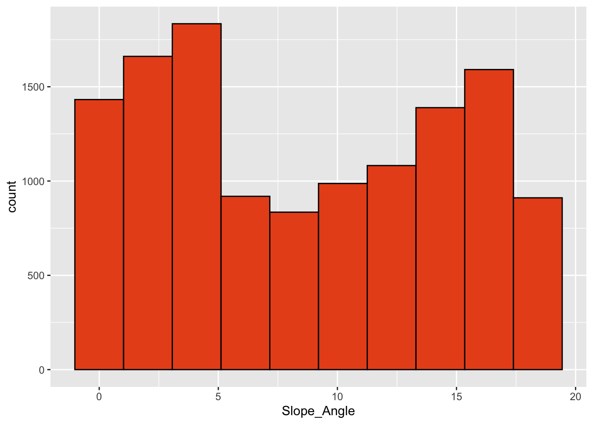
ggplot(data=sample_Q2, aes(x= `Slope_Angle`)) +
geom_histogram(bins=10, color="black", fill="#e9531e")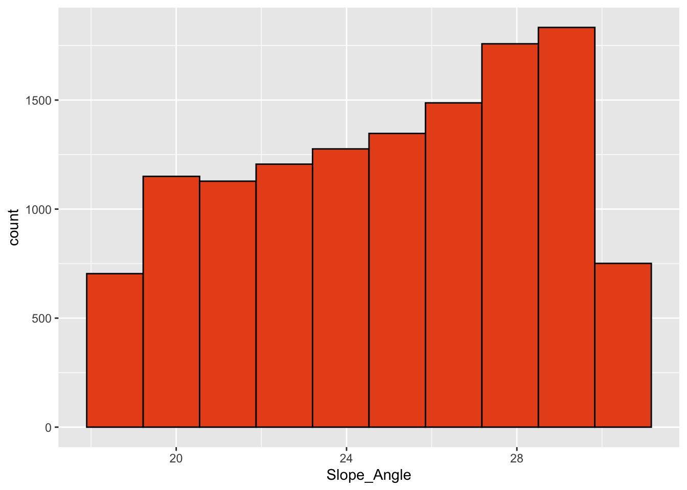
ggplot(data=sample_Q3, aes(x= `Slope_Angle`)) +
geom_histogram(bins=10, color="black", fill="#e9531e")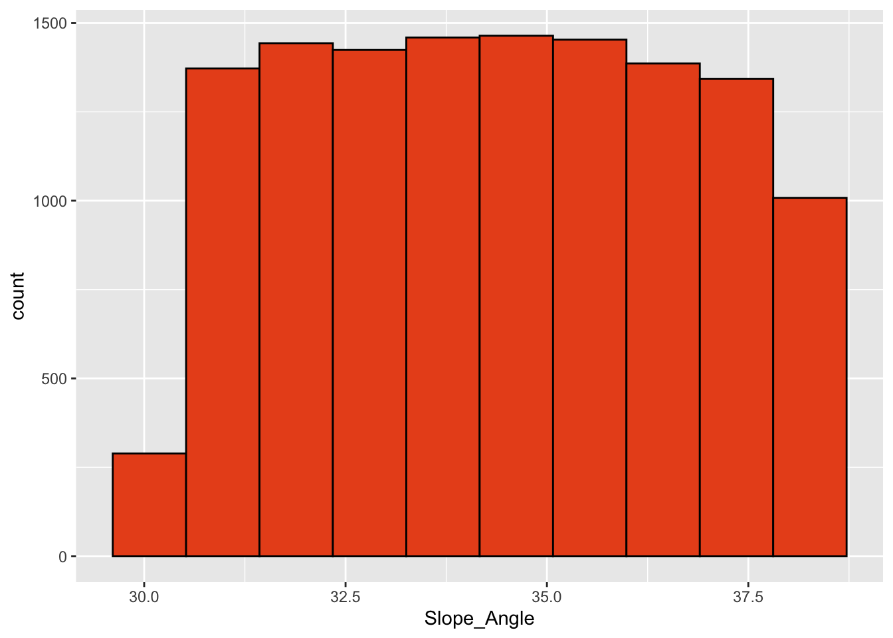
ggplot(data=sample_Q4, aes(x= `Slope_Angle`)) +
geom_histogram(bins=10, color="black", fill="#e9531e")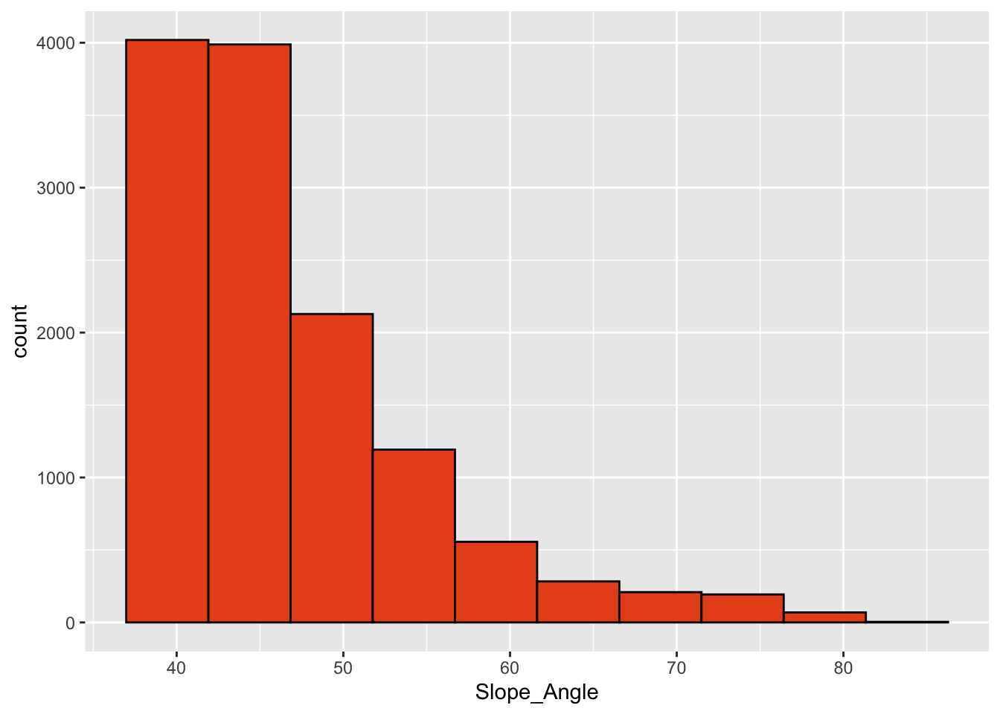
3.4 Creating Correlation Matrix
Next, we will use the ggcorrmat function from the ggstatsplot package to create a correlation matrix for each dataset.
We set
matrix.typeto “upper”, which means it will only show the upper triangle of the correlation matrix.We set
typeto “parametric”, which means it will calculating the correlations using a parametric method (Pearson’s correlation).We set
kto 2,sig.levelto 0.05,conf.levelto 0.95, andbf.priorto 0.707. These are parameters for the statistical tests thatggcorrmatperforms
set.seed(123)
ggcorrmat(
data = sample_Q6[, 6:29],
matrix.type = "upper",
type = "parametric",
tr = 0.2,
partial = FALSE,
k = 2L,
sig.level = 0.05,
conf.level = 0.95,
bf.prior = 0.707,
ggcorrplot.args = list(
tl.cex = 10,
pch.cex = 5,
lab_size = 3
)) +
ggplot2::theme(
axis.text.x = ggplot2::element_text(
margin = ggplot2::margin(t = 0.15, r = 0.15, b = 0.15, l = 0.15, unit = "cm")
)
)


4.0 Logistic Regression Modelling
In this section, we will model a logistic regression model for each data sample.
Before wee build the model, we will need to split each data sample into training data and testing data. This is a common practice in machine learning and statistical modeling, where a model is trained on the training set and then evaluated on the test set. We use sample function to carry out test-train split with 7:3 ratio, resulting in four training sets (Q1_train, Q2_train, Q3_train, Q4_train) and four test sets (Q1_test, Q2_test, Q3_test, Q4_test).
sample <- sample(c(TRUE, FALSE), nrow(sample_Q1), replace=TRUE, prob=c(0.70,0.30))
Q1_train <- sample_Q1[sample, ]
Q1_test <- sample_Q1[!sample, ]
sample <- sample(c(TRUE, FALSE), nrow(sample_Q2), replace=TRUE, prob=c(0.70,0.30))
Q2_train <- sample_Q2[sample, ]
Q2_test <- sample_Q2[!sample, ]
sample <- sample(c(TRUE, FALSE), nrow(sample_Q3), replace=TRUE, prob=c(0.70,0.30))
Q3_train <- sample_Q3[sample, ]
Q3_test <- sample_Q3[!sample, ]
sample <- sample(c(TRUE, FALSE), nrow(sample_Q4), replace=TRUE, prob=c(0.70,0.30))
Q4_train <- sample_Q4[sample, ]
Q4_test <- sample_Q4[!sample, ]Once we have split the test and train for each data sample, we will now proceed to build a Logistic Regression (LR) model for each sampling dataset. We will fit the model using the glm function from stats package. It is used to fit generalized linear models, specified by giving a symbolic description of the linear predictor and a description of the error distribution.
4.1 Logistic Regression Model 1 (Slope Cut-off = 1st Quartile)
First LR model, log_model_1 is fitted using Q1_train dataset with specifications as follows:
The model is predicting the
Landslidevariable based on a number of predictor variables, includingElevation,Slope_Angle,Aspect_North,Aspect_NorthEast,Aspect_East,Aspect_SouthEast,Aspect_South,Aspect_SouthWest,Aspect_West,Profile_Curvature,Plan_Curvature,Lithology_Metamorphic,Lithology_Sedimentary,Lithology_Plutonic,Lithology_Unconsolidated,Proximity_Settlement,Proximity_Stream,Proximity_Road,Proximity_Fault,Landuse_Vegetation,Precipitation,TWI,SPI, andSTI.The
familyargument is set to"binomial"to fit a binomial logistic regression model.
log_model_1 <- glm(Landslide ~ Elevation + Slope_Angle + Aspect_North + Aspect_NorthEast + Aspect_East+Aspect_SouthEast+Aspect_South + Aspect_SouthWest +Aspect_West + Profile_Curvature +Plan_Curvature + Lithology_Metamorphic+Lithology_Sedimentary + Lithology_Plutonic+Lithology_Unconsolidated + Proximity_Settlement+Proximity_Stream+Proximity_Road+Proximity_Fault+Landuse_Vegetation+Precipitation+TWI+SPI+STI, family = "binomial", data = Q1_train)4.1.1 Generating Model Summary
Once we have fitted the model, we will generate a summary of the model using summary() function. The model summary give us useful information about the model, including the coefficients of the predictor variables, the standard errors of these coefficients, and the statistical significance of each predictor.
summary(log_model_1)
Call:
glm(formula = Landslide ~ Elevation + Slope_Angle + Aspect_North +
Aspect_NorthEast + Aspect_East + Aspect_SouthEast + Aspect_South +
Aspect_SouthWest + Aspect_West + Profile_Curvature + Plan_Curvature +
Lithology_Metamorphic + Lithology_Sedimentary + Lithology_Plutonic +
Lithology_Unconsolidated + Proximity_Settlement + Proximity_Stream +
Proximity_Road + Proximity_Fault + Landuse_Vegetation + Precipitation +
TWI + SPI + STI, family = "binomial", data = Q1_train)
Coefficients:
Estimate Std. Error z value Pr(>|z|)
(Intercept) -2.556e+00 3.111e-01 -8.218 < 2e-16 ***
Elevation -2.048e-04 5.595e-05 -3.661 0.000251 ***
Slope_Angle 2.518e-01 6.525e-03 38.589 < 2e-16 ***
Aspect_North 4.673e-03 1.475e-01 0.032 0.974720
Aspect_NorthEast -2.675e-01 1.232e-01 -2.172 0.029863 *
Aspect_East -4.391e-01 1.234e-01 -3.558 0.000373 ***
Aspect_SouthEast -4.797e-01 1.191e-01 -4.029 5.60e-05 ***
Aspect_South -3.531e-01 1.150e-01 -3.070 0.002140 **
Aspect_SouthWest -2.760e-01 1.171e-01 -2.357 0.018420 *
Aspect_West -3.009e-01 1.180e-01 -2.549 0.010794 *
Profile_Curvature -9.020e+02 3.419e+01 -26.382 < 2e-16 ***
Plan_Curvature -7.776e+02 4.085e+01 -19.036 < 2e-16 ***
Lithology_Metamorphic 7.321e-01 1.741e-01 4.204 2.62e-05 ***
Lithology_Sedimentary 1.149e+00 1.795e-01 6.400 1.55e-10 ***
Lithology_Plutonic -8.843e-01 1.627e-01 -5.435 5.47e-08 ***
Lithology_Unconsolidated 1.286e+00 1.743e-01 7.382 1.56e-13 ***
Proximity_Settlement 7.522e-06 5.152e-05 0.146 0.883932
Proximity_Stream -6.666e-03 2.685e-03 -2.483 0.013045 *
Proximity_Road -1.658e-03 1.830e-03 -0.906 0.364696
Proximity_Fault -1.756e-05 3.111e-05 -0.565 0.572376
Landuse_Vegetation 6.213e-01 6.659e-02 9.330 < 2e-16 ***
Precipitation -6.711e+00 7.422e-01 -9.042 < 2e-16 ***
TWI -6.276e-02 1.402e-02 -4.476 7.61e-06 ***
SPI 1.836e+00 1.146e+00 1.602 0.109070
STI -8.197e-04 1.300e-03 -0.631 0.528255
---
Signif. codes: 0 '***' 0.001 '**' 0.01 '*' 0.05 '.' 0.1 ' ' 1
(Dispersion parameter for binomial family taken to be 1)
Null deviance: 11965.2 on 8862 degrees of freedom
Residual deviance: 7164.9 on 8838 degrees of freedom
AIC: 7214.9
Number of Fisher Scoring iterations: 54.1.2 Calculating Percentage of Deviance
Next, we will calculate the percentage of deviance explained by the model. The deviance is a measure of how well the model fits the data, with lower values indicating a better fit. The null deviance is the deviance of a model with no predictors, i.e., a model that only includes the intercept. So, this calculation gives me the percentage reduction in deviance when going from the null model to the current model.
100*with(summary(log_model_1), 1 - deviance/null.deviance)[1] 40.118824.1.3 Confusion Matrix
Next, we will generate a confusion matrix for the model predictions using blr_confusion_matrix() function from blorr package. The confusion matrix shows the number of true positives, true negatives, false positives, and false negatives. The cutoff argument is set to 0.5, which means that predicted probabilities greater than or equal to 0.5 are classified as positive, and predicted probabilities less than 0.5 are classified as negative.
blr_confusion_matrix(log_model_1, cutoff = 0.5)Confusion Matrix and Statistics
Reference
Prediction 0 1
0 4600 878
1 673 2712
Accuracy : 0.8250
No Information Rate : 0.5949
Kappa : 0.6336
McNemars's Test P-Value : 0.0000
Sensitivity : 0.7554
Specificity : 0.8724
Pos Pred Value : 0.8012
Neg Pred Value : 0.8397
Prevalence : 0.4051
Detection Rate : 0.3060
Detection Prevalence : 0.3819
Balanced Accuracy : 0.8139
Precision : 0.8012
Recall : 0.7554
'Positive' Class : 14.1.4 Ploting ROC Curve and Calculating AUC
Finally, we will plot the ROC curve and calculate the AUC. The ROC curve is a plot of the true positive rate against the false positive rate for different cutoff values, and the AUC is the area under the ROC curve. These are common metrics for evaluating the performance of a binary classifier. The roc function from the pROC package is used to calculate the ROC curve, and the auc function is used to calculate the AUC.
predicted <- predict(log_model_1, Q1_test[, 6:29], type="response")
roc_curve <- roc(Q1_test$Landslide, predicted)Setting levels: control = 0, case = 1Setting direction: controls < casesplot(roc_curve, main = "ROC Curve (Model 1)")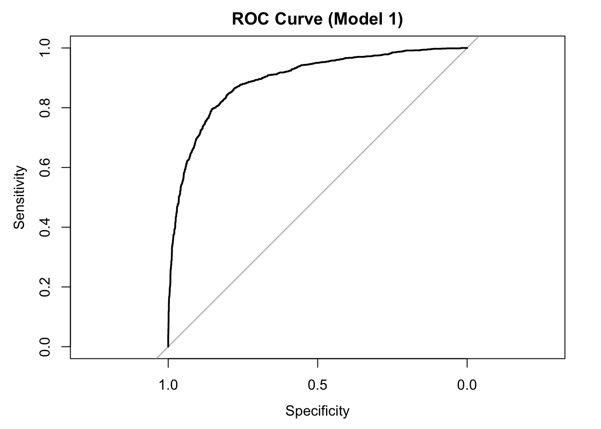
auc_value <- auc(roc_curve)
cat("AUC:", auc_value, "\n")AUC: 0.8891783 4.2 Logistic Regression Model 2 (Slope Cut-off = 2nd Quartile)
log_model_2 <- glm(Landslide ~ Elevation + Slope_Angle + Aspect_North + Aspect_NorthEast + Aspect_East+Aspect_SouthEast+Aspect_South + Aspect_SouthWest +Aspect_West + Profile_Curvature +Plan_Curvature + Lithology_Metamorphic+Lithology_Sedimentary + Lithology_Plutonic+Lithology_Unconsolidated + Proximity_Settlement+Proximity_Stream+Proximity_Road+Proximity_Fault+Landuse_Vegetation+Precipitation+TWI+SPI+STI, family = "binomial", data = Q2_train)4.2.1 Generating Model Summary
summary(log_model_2)
Call:
glm(formula = Landslide ~ Elevation + Slope_Angle + Aspect_North +
Aspect_NorthEast + Aspect_East + Aspect_SouthEast + Aspect_South +
Aspect_SouthWest + Aspect_West + Profile_Curvature + Plan_Curvature +
Lithology_Metamorphic + Lithology_Sedimentary + Lithology_Plutonic +
Lithology_Unconsolidated + Proximity_Settlement + Proximity_Stream +
Proximity_Road + Proximity_Fault + Landuse_Vegetation + Precipitation +
TWI + SPI + STI, family = "binomial", data = Q2_train)
Coefficients:
Estimate Std. Error z value Pr(>|z|)
(Intercept) -8.735e+00 8.915e-01 -9.798 < 2e-16 ***
Elevation -4.186e-04 1.579e-04 -2.650 0.00804 **
Slope_Angle 5.001e-01 2.242e-02 22.309 < 2e-16 ***
Aspect_North -1.130e-01 2.661e-01 -0.425 0.67106
Aspect_NorthEast -4.171e-01 2.238e-01 -1.864 0.06239 .
Aspect_East -3.970e-01 2.215e-01 -1.793 0.07303 .
Aspect_SouthEast -3.119e-01 2.216e-01 -1.407 0.15938
Aspect_South -1.832e-01 2.265e-01 -0.809 0.41866
Aspect_SouthWest 6.254e-01 2.585e-01 2.419 0.01555 *
Aspect_West -6.435e-02 2.305e-01 -0.279 0.78014
Profile_Curvature -7.971e+02 6.254e+01 -12.746 < 2e-16 ***
Plan_Curvature -5.561e+02 6.953e+01 -7.999 1.26e-15 ***
Lithology_Metamorphic 8.793e-01 2.562e-01 3.432 0.00060 ***
Lithology_Sedimentary 1.368e+00 2.741e-01 4.991 6.02e-07 ***
Lithology_Plutonic -5.436e-01 2.579e-01 -2.108 0.03504 *
Lithology_Unconsolidated 1.573e+00 2.641e-01 5.957 2.57e-09 ***
Proximity_Settlement 2.475e-04 9.357e-05 2.645 0.00816 **
Proximity_Stream -2.964e-03 4.920e-03 -0.602 0.54687
Proximity_Road -4.843e-03 3.161e-03 -1.532 0.12541
Proximity_Fault 9.810e-05 5.327e-05 1.842 0.06554 .
Landuse_Vegetation 6.816e-01 1.463e-01 4.658 3.19e-06 ***
Precipitation -1.209e+00 1.291e+00 -0.937 0.34871
TWI -7.087e-02 5.079e-02 -1.395 0.16290
SPI -3.463e-01 1.631e+00 -0.212 0.83183
STI -2.759e-03 2.048e-03 -1.347 0.17805
---
Signif. codes: 0 '***' 0.001 '**' 0.01 '*' 0.05 '.' 0.1 ' ' 1
(Dispersion parameter for binomial family taken to be 1)
Null deviance: 4131.4 on 8844 degrees of freedom
Residual deviance: 2410.4 on 8820 degrees of freedom
AIC: 2460.4
Number of Fisher Scoring iterations: 74.2.2 Calculating Percentage of Deviance
100*with(summary(log_model_2), 1 - deviance/null.deviance)[1] 41.655424.2.3 Confusion Matrix
blr_confusion_matrix(log_model_2, cutoff = 0.5)Confusion Matrix and Statistics
Reference
Prediction 0 1
0 189 84
1 363 8209
Accuracy : 0.9495
No Information Rate : 0.0624
Kappa : 0.4348
McNemars's Test P-Value : 0.0000
Sensitivity : 0.9899
Specificity : 0.3424
Pos Pred Value : 0.9577
Neg Pred Value : 0.6923
Prevalence : 0.9376
Detection Rate : 0.9281
Detection Prevalence : 0.9691
Balanced Accuracy : 0.6661
Precision : 0.9577
Recall : 0.9899
'Positive' Class : 14.2.4 Ploting ROC Curve and Calculating AUC
predicted <- predict(log_model_2, Q2_test[, 6:29], type="response")
roc_curve <- roc(Q2_test$Landslide, predicted)Setting levels: control = 0, case = 1Setting direction: controls < cases# Plot the ROC curve
plot(roc_curve, main = "ROC Curve (Model 2)")
abline(0, 1, lty = 2, col = "gray") # Add a reference line for a random classifierauc_value <- auc(roc_curve)
cat("AUC:", auc_value, "\n")AUC: 0.9320681 4.3 Logistic Regression Model 3 (Slope Cut-off = 3rd Quartile)
log_model_3 <- glm(Landslide ~ Elevation + Aspect_North + Aspect_NorthEast + Aspect_East+Aspect_SouthEast+Aspect_South + Aspect_SouthWest +Aspect_West + Profile_Curvature +Plan_Curvature + Lithology_Metamorphic+Lithology_Sedimentary + Lithology_Plutonic+Lithology_Unconsolidated + Proximity_Settlement+Proximity_Stream+Proximity_Road+Proximity_Fault+Landuse_Vegetation+Precipitation+TWI+SPI+STI, family = "binomial", data = Q3_train)Warning: glm.fit: fitted probabilities numerically 0 or 1 occurred4.3.1 Generating Model Summary
summary(log_model_3)
Call:
glm(formula = Landslide ~ Elevation + Aspect_North + Aspect_NorthEast +
Aspect_East + Aspect_SouthEast + Aspect_South + Aspect_SouthWest +
Aspect_West + Profile_Curvature + Plan_Curvature + Lithology_Metamorphic +
Lithology_Sedimentary + Lithology_Plutonic + Lithology_Unconsolidated +
Proximity_Settlement + Proximity_Stream + Proximity_Road +
Proximity_Fault + Landuse_Vegetation + Precipitation + TWI +
SPI + STI, family = "binomial", data = Q3_train)
Coefficients:
Estimate Std. Error z value Pr(>|z|)
(Intercept) 3.729e+01 4.240e+04 0.001 0.99930
Elevation 1.300e-04 1.015e-03 0.128 0.89808
Aspect_North 1.761e+01 4.795e+03 0.004 0.99707
Aspect_NorthEast -3.610e-01 1.256e+00 -0.287 0.77379
Aspect_East 1.790e+01 2.770e+03 0.006 0.99485
Aspect_SouthEast 1.051e+00 1.518e+00 0.693 0.48859
Aspect_South -9.981e-02 1.260e+00 -0.079 0.93687
Aspect_SouthWest 1.824e-01 1.277e+00 0.143 0.88644
Aspect_West 1.727e+01 2.909e+03 0.006 0.99526
Profile_Curvature -8.463e+02 3.283e+02 -2.578 0.00994 **
Plan_Curvature -4.788e+02 3.804e+02 -1.259 0.20817
Lithology_Metamorphic -3.025e+01 4.240e+04 -0.001 0.99943
Lithology_Sedimentary -2.901e+01 4.240e+04 -0.001 0.99945
Lithology_Plutonic -3.045e+01 4.240e+04 -0.001 0.99943
Lithology_Unconsolidated -1.270e+01 4.246e+04 0.000 0.99976
Proximity_Settlement 1.563e-03 1.035e-03 1.510 0.13110
Proximity_Stream -6.067e-02 4.047e-02 -1.499 0.13378
Proximity_Road 4.416e-02 3.479e-02 1.269 0.20431
Proximity_Fault -1.410e-04 3.195e-04 -0.441 0.65887
Landuse_Vegetation 1.472e+00 1.110e+00 1.325 0.18505
Precipitation -1.376e+01 1.014e+01 -1.358 0.17458
TWI -1.691e-01 3.928e-01 -0.431 0.66681
SPI -1.772e+01 7.743e+00 -2.288 0.02212 *
STI 2.569e-01 1.636e-01 1.570 0.11631
---
Signif. codes: 0 '***' 0.001 '**' 0.01 '*' 0.05 '.' 0.1 ' ' 1
(Dispersion parameter for binomial family taken to be 1)
Null deviance: 155.494 on 8758 degrees of freedom
Residual deviance: 88.528 on 8735 degrees of freedom
AIC: 136.53
Number of Fisher Scoring iterations: 234.3.2 Calculating Percentage of Deviance
100*with(summary(log_model_3), 1 - deviance/null.deviance)[1] 43.066634.3.3 Confusion Matrix
blr_confusion_matrix(log_model_3, cutoff = 0.5)Confusion Matrix and Statistics
Reference
Prediction 0 1
0 2 0
1 8 8749
Accuracy : 0.9991
No Information Rate : 0.0011
Kappa : 0.3331
McNemars's Test P-Value : 0.0133
Sensitivity : 1.0000
Specificity : 0.2000
Pos Pred Value : 0.9991
Neg Pred Value : 1.0000
Prevalence : 0.9989
Detection Rate : 0.9989
Detection Prevalence : 0.9998
Balanced Accuracy : 0.6000
Precision : 0.9991
Recall : 1.0000
'Positive' Class : 14.3.4 Ploting ROC Curve and Calculating AUC
predicted <- predict(log_model_3, Q3_test[, 6:29], type="response")
roc_curve <- roc(Q3_test$Landslide, predicted)Setting levels: control = 0, case = 1Setting direction: controls < cases# Plot the ROC curve
plot(roc_curve, main = "ROC Curve (Model 3)")
abline(0, 1, lty = 2, col = "gray") 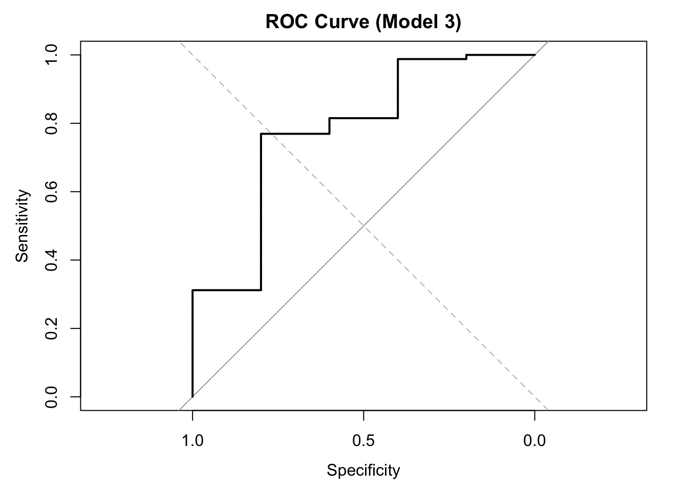
auc_value <- auc(roc_curve)
cat("AUC:", auc_value, "\n")AUC: 0.5864885 4.4 Logistic Regression Model 4 (Slope Cut-off = 4th Quartile)
log_model_4 <- glm(Landslide ~ Elevation + Slope_Angle + Aspect_North + Aspect_NorthEast + Aspect_East+Aspect_SouthEast+Aspect_South + Aspect_SouthWest +Aspect_West + Profile_Curvature +Plan_Curvature + Lithology_Metamorphic+Lithology_Sedimentary + Lithology_Plutonic+Lithology_Unconsolidated + Proximity_Settlement+Proximity_Stream+Proximity_Road+Proximity_Fault+Landuse_Vegetation+Precipitation+TWI+SPI+STI, family = "binomial", data = Q4_train)4.4.1 Generating Model Summary
summary(log_model_4)
Call:
glm(formula = Landslide ~ Elevation + Slope_Angle + Aspect_North +
Aspect_NorthEast + Aspect_East + Aspect_SouthEast + Aspect_South +
Aspect_SouthWest + Aspect_West + Profile_Curvature + Plan_Curvature +
Lithology_Metamorphic + Lithology_Sedimentary + Lithology_Plutonic +
Lithology_Unconsolidated + Proximity_Settlement + Proximity_Stream +
Proximity_Road + Proximity_Fault + Landuse_Vegetation + Precipitation +
TWI + SPI + STI, family = "binomial", data = Q4_train)
Coefficients:
Estimate Std. Error z value Pr(>|z|)
(Intercept) 1.712e+01 1.944e+00 8.805 < 2e-16 ***
Elevation 7.268e-04 2.910e-04 2.498 0.012502 *
Slope_Angle -3.225e-01 1.799e-02 -17.928 < 2e-16 ***
Aspect_North 3.570e-01 6.567e-01 0.544 0.586682
Aspect_NorthEast 2.461e-01 5.408e-01 0.455 0.649066
Aspect_East 8.297e-01 5.466e-01 1.518 0.129017
Aspect_SouthEast 6.618e-01 5.160e-01 1.283 0.199640
Aspect_South 7.690e-01 5.052e-01 1.522 0.127944
Aspect_SouthWest 1.862e-01 5.105e-01 0.365 0.715256
Aspect_West 7.293e-01 5.676e-01 1.285 0.198836
Profile_Curvature -1.032e+02 7.919e+01 -1.304 0.192355
Plan_Curvature -8.003e+01 1.026e+02 -0.780 0.435266
Lithology_Metamorphic 2.339e+00 5.862e-01 3.990 6.60e-05 ***
Lithology_Sedimentary 2.637e+00 6.281e-01 4.199 2.68e-05 ***
Lithology_Plutonic 2.642e+00 5.627e-01 4.695 2.67e-06 ***
Lithology_Unconsolidated 1.906e+00 6.633e-01 2.874 0.004055 **
Proximity_Settlement -4.936e-04 1.922e-04 -2.568 0.010223 *
Proximity_Stream -3.837e-02 1.450e-02 -2.646 0.008138 **
Proximity_Road 1.399e-02 6.477e-03 2.160 0.030747 *
Proximity_Fault -3.004e-04 8.332e-05 -3.606 0.000311 ***
Landuse_Vegetation 6.576e-01 2.965e-01 2.218 0.026584 *
Precipitation -1.382e+00 3.953e+00 -0.349 0.726721
TWI 3.804e-01 1.522e-01 2.499 0.012456 *
SPI 1.354e+01 9.481e+00 1.428 0.153342
STI -4.715e-03 4.175e-03 -1.129 0.258798
---
Signif. codes: 0 '***' 0.001 '**' 0.01 '*' 0.05 '.' 0.1 ' ' 1
(Dispersion parameter for binomial family taken to be 1)
Null deviance: 2450.51 on 8847 degrees of freedom
Residual deviance: 568.32 on 8823 degrees of freedom
AIC: 618.32
Number of Fisher Scoring iterations: 94.4.2 Calculating Percentage of Deviance
100*with(summary(log_model_4), 1 - deviance/null.deviance)[1] 76.808044.4.3 Confusion Matrix
blr_confusion_matrix(log_model_4, cutoff = 0.5)Confusion Matrix and Statistics
Reference
Prediction 0 1
0 218 33
1 57 8540
Accuracy : 0.9898
No Information Rate : 0.0311
Kappa : 0.8237
McNemars's Test P-Value : 0.0153
Sensitivity : 0.9962
Specificity : 0.7927
Pos Pred Value : 0.9934
Neg Pred Value : 0.8685
Prevalence : 0.9689
Detection Rate : 0.9652
Detection Prevalence : 0.9716
Balanced Accuracy : 0.8944
Precision : 0.9934
Recall : 0.9962
'Positive' Class : 14.4.4 Ploting ROC Curve and Calculating AUC
predicted <- predict(log_model_4, Q4_test[, 6:29], type="response")
roc_curve <- roc(Q4_test$Landslide, predicted)Setting levels: control = 0, case = 1Setting direction: controls < casesplot(roc_curve, main = "ROC Curve (Model 4)")
abline(0, 1, lty = 2, col = "gray") 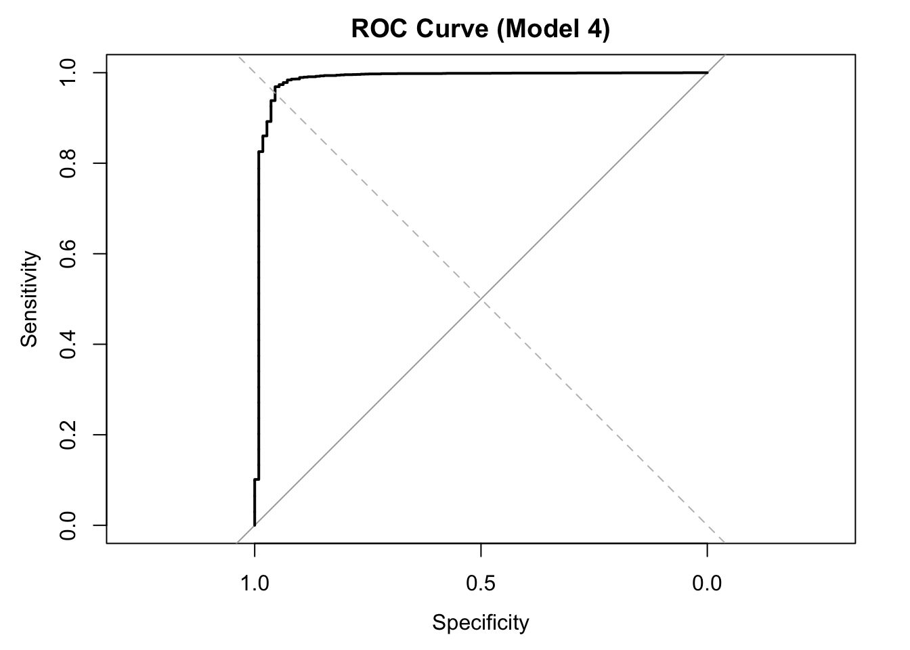
auc_value <- auc(roc_curve)
cat("AUC:", auc_value, "\n")AUC: 0.9847468 4.5 Logistic Regression Model 5 (Slope Cut-off = 25)
sample_Q5 <- subset(train_grids_v4,Slope_Angle < 25)
nrow(sample_Q5)[1] 18578ggplot(data=sample_Q5, aes(x= `Slope_Angle`)) +
geom_histogram(bins=10, color="black", fill="#e9531e") +
ggtitle("Slope Stratified Sampling (Cut-off 25)")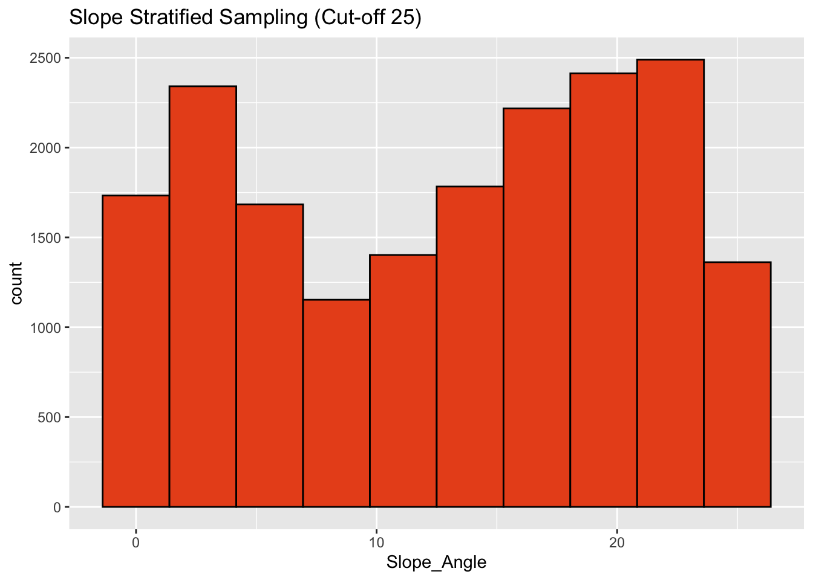
sample <- sample(c(TRUE, FALSE), nrow(sample_Q5), replace=TRUE, prob=c(0.70,0.30))
Q5_train <- sample_Q5[sample, ]
Q5_test <- sample_Q5[!sample, ]log_model_5 <- glm(Landslide ~ Elevation + Slope_Angle + Aspect_North + Aspect_NorthEast + Aspect_East+Aspect_SouthEast+Aspect_South + Aspect_SouthWest +Aspect_West + Profile_Curvature +Plan_Curvature + Lithology_Metamorphic+Lithology_Sedimentary + Lithology_Plutonic+Lithology_Unconsolidated + Proximity_Settlement+Proximity_Stream+Proximity_Road+Proximity_Fault+Landuse_Vegetation+Precipitation+TWI+SPI+STI, family = "binomial", data = Q5_train)4.5.1 Generating Model Summary
summary(log_model_5)
Call:
glm(formula = Landslide ~ Elevation + Slope_Angle + Aspect_North +
Aspect_NorthEast + Aspect_East + Aspect_SouthEast + Aspect_South +
Aspect_SouthWest + Aspect_West + Profile_Curvature + Plan_Curvature +
Lithology_Metamorphic + Lithology_Sedimentary + Lithology_Plutonic +
Lithology_Unconsolidated + Proximity_Settlement + Proximity_Stream +
Proximity_Road + Proximity_Fault + Landuse_Vegetation + Precipitation +
TWI + SPI + STI, family = "binomial", data = Q5_train)
Coefficients:
Estimate Std. Error z value Pr(>|z|)
(Intercept) -3.189e+00 2.758e-01 -11.560 < 2e-16 ***
Elevation -1.916e-04 5.164e-05 -3.710 0.000207 ***
Slope_Angle 2.547e-01 4.918e-03 51.776 < 2e-16 ***
Aspect_North -1.255e-01 1.294e-01 -0.970 0.331908
Aspect_NorthEast -2.130e-01 1.085e-01 -1.964 0.049532 *
Aspect_East -3.757e-01 1.067e-01 -3.519 0.000433 ***
Aspect_SouthEast -2.694e-01 1.042e-01 -2.586 0.009715 **
Aspect_South -2.352e-01 1.024e-01 -2.297 0.021642 *
Aspect_SouthWest -1.081e-01 1.048e-01 -1.031 0.302512
Aspect_West -1.362e-01 1.046e-01 -1.303 0.192699
Profile_Curvature -8.692e+02 3.013e+01 -28.854 < 2e-16 ***
Plan_Curvature -6.951e+02 3.413e+01 -20.368 < 2e-16 ***
Lithology_Metamorphic 7.376e-01 1.374e-01 5.367 8.01e-08 ***
Lithology_Sedimentary 1.193e+00 1.432e-01 8.329 < 2e-16 ***
Lithology_Plutonic -6.195e-01 1.318e-01 -4.701 2.58e-06 ***
Lithology_Unconsolidated 1.320e+00 1.388e-01 9.509 < 2e-16 ***
Proximity_Settlement 7.579e-05 4.497e-05 1.685 0.091927 .
Proximity_Stream -6.302e-03 2.348e-03 -2.684 0.007270 **
Proximity_Road -3.667e-03 1.594e-03 -2.301 0.021415 *
Proximity_Fault 2.340e-07 2.561e-05 0.009 0.992708
Landuse_Vegetation 6.285e-01 5.987e-02 10.499 < 2e-16 ***
Precipitation -5.176e+00 6.462e-01 -8.010 1.15e-15 ***
TWI -4.201e-02 1.330e-02 -3.158 0.001590 **
SPI 7.550e-01 1.001e+00 0.754 0.450812
STI -6.657e-04 1.243e-03 -0.535 0.592322
---
Signif. codes: 0 '***' 0.001 '**' 0.01 '*' 0.05 '.' 0.1 ' ' 1
(Dispersion parameter for binomial family taken to be 1)
Null deviance: 17929.0 on 13031 degrees of freedom
Residual deviance: 9387.3 on 13007 degrees of freedom
AIC: 9437.3
Number of Fisher Scoring iterations: 54.5.2 Calculating Percentage of Deviance
100*with(summary(log_model_5), 1 - deviance/null.deviance)[1] 47.642044.5.3 Confusion Matrix
blr_confusion_matrix(log_model_5, cutoff = 0.5)Confusion Matrix and Statistics
Reference
Prediction 0 1
0 4809 1003
1 1039 6181
Accuracy : 0.8433
No Information Rate : 0.4487
Kappa : 0.6831
McNemars's Test P-Value : 0.4386
Sensitivity : 0.8604
Specificity : 0.8223
Pos Pred Value : 0.8561
Neg Pred Value : 0.8274
Prevalence : 0.5513
Detection Rate : 0.4743
Detection Prevalence : 0.5540
Balanced Accuracy : 0.8414
Precision : 0.8561
Recall : 0.8604
'Positive' Class : 14.5.4 Ploting ROC Curve and Calculating AUC
predicted <- predict(log_model_5, Q5_test[, 6:29], type="response")
roc_curve <- roc(Q5_test$Landslide, predicted)Setting levels: control = 0, case = 1Setting direction: controls < cases# Plot the ROC curve
plot(roc_curve, main = "ROC Curve (Model 5)")
abline(0, 1, lty = 2, col = "gray") # Add a reference line for a random classifier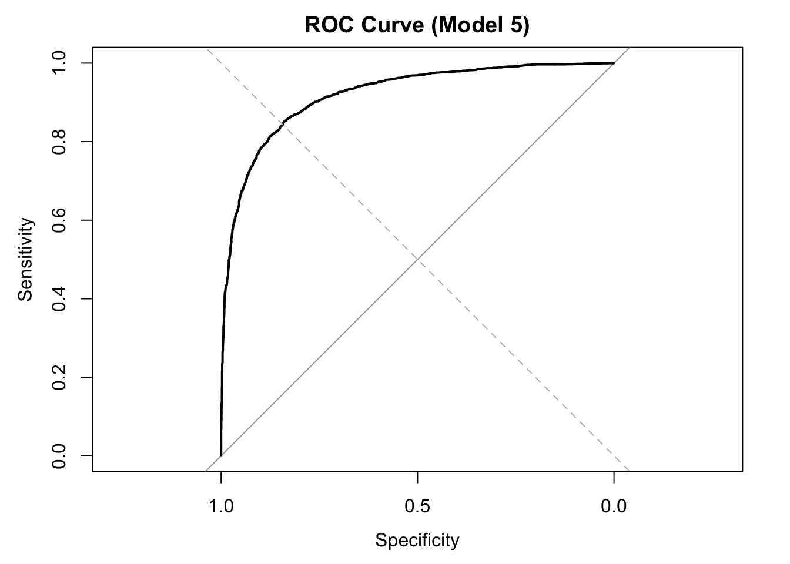
auc_value <- auc(roc_curve)
cat("AUC:", auc_value, "\n")AUC: 0.9199029 4.6 Logistic Regression Model 6 (Slope Cut-off = 20)
set.seed(123)
sample_Q6 <- subset(train_grids_v4,Slope_Angle < 20)
nrow(sample_Q6)[1] 14020ggplot(data=sample_Q6, aes(x= `Slope_Angle`)) +
geom_histogram(bins=10, color="black", fill="#e9531e")+
ggtitle("Slope Stratified Sampling (Cut-off 20)")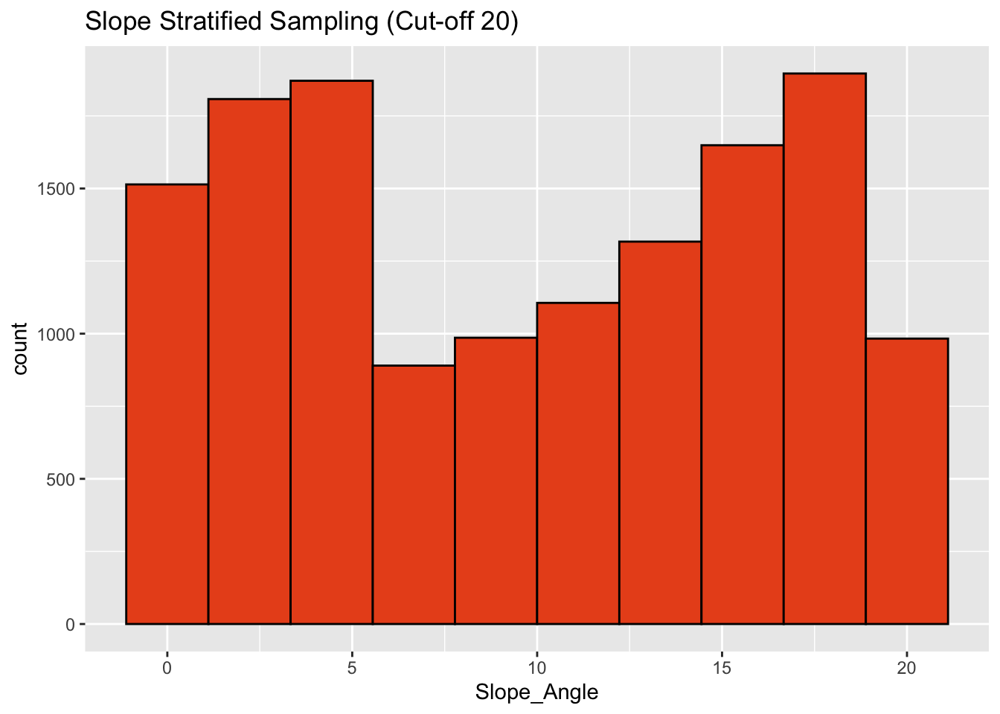
sample <- sample(c(TRUE, FALSE), nrow(sample_Q6), replace=TRUE, prob=c(0.70,0.30))
Q6_train <- sample_Q6[sample, ]
Q6_test <- sample_Q6[!sample, ]log_model_6 <- glm(Landslide ~ Elevation + Slope_Angle + Aspect_North + Aspect_NorthEast + Aspect_East+Aspect_SouthEast+Aspect_South + Aspect_SouthWest +Aspect_West + Profile_Curvature +Plan_Curvature + Lithology_Metamorphic+Lithology_Sedimentary + Lithology_Plutonic+Lithology_Unconsolidated + Proximity_Settlement+Proximity_Stream+Proximity_Road+Proximity_Fault+Landuse_Vegetation+Precipitation+TWI+SPI+STI, family = "binomial", data = Q6_train)4.6.1 Generating Model Summary
summary(log_model_6)
Call:
glm(formula = Landslide ~ Elevation + Slope_Angle + Aspect_North +
Aspect_NorthEast + Aspect_East + Aspect_SouthEast + Aspect_South +
Aspect_SouthWest + Aspect_West + Profile_Curvature + Plan_Curvature +
Lithology_Metamorphic + Lithology_Sedimentary + Lithology_Plutonic +
Lithology_Unconsolidated + Proximity_Settlement + Proximity_Stream +
Proximity_Road + Proximity_Fault + Landuse_Vegetation + Precipitation +
TWI + SPI + STI, family = "binomial", data = Q6_train)
Coefficients:
Estimate Std. Error z value Pr(>|z|)
(Intercept) -2.935e+00 2.928e-01 -10.027 < 2e-16 ***
Elevation -2.180e-04 5.309e-05 -4.106 4.03e-05 ***
Slope_Angle 2.380e-01 5.824e-03 40.866 < 2e-16 ***
Aspect_North -9.506e-02 1.360e-01 -0.699 0.48442
Aspect_NorthEast -2.609e-01 1.164e-01 -2.241 0.02505 *
Aspect_East -3.522e-01 1.154e-01 -3.053 0.00226 **
Aspect_SouthEast -3.591e-01 1.116e-01 -3.219 0.00129 **
Aspect_South -3.287e-01 1.090e-01 -3.015 0.00257 **
Aspect_SouthWest -2.990e-01 1.115e-01 -2.683 0.00730 **
Aspect_West -1.493e-01 1.116e-01 -1.338 0.18102
Profile_Curvature -8.478e+02 3.166e+01 -26.774 < 2e-16 ***
Plan_Curvature -7.141e+02 3.730e+01 -19.146 < 2e-16 ***
Lithology_Metamorphic 8.882e-01 1.605e-01 5.534 3.13e-08 ***
Lithology_Sedimentary 1.363e+00 1.656e-01 8.227 < 2e-16 ***
Lithology_Plutonic -1.028e+00 1.548e-01 -6.638 3.19e-11 ***
Lithology_Unconsolidated 1.429e+00 1.606e-01 8.895 < 2e-16 ***
Proximity_Settlement 5.232e-05 4.807e-05 1.089 0.27637
Proximity_Stream -5.267e-03 2.562e-03 -2.056 0.03982 *
Proximity_Road -3.428e-03 1.682e-03 -2.038 0.04159 *
Proximity_Fault -1.640e-05 2.833e-05 -0.579 0.56267
Landuse_Vegetation 5.954e-01 6.274e-02 9.490 < 2e-16 ***
Precipitation -6.212e+00 6.973e-01 -8.908 < 2e-16 ***
TWI -3.580e-02 1.359e-02 -2.634 0.00843 **
SPI 1.357e+00 9.876e-01 1.374 0.16939
STI -9.589e-04 1.274e-03 -0.753 0.45173
---
Signif. codes: 0 '***' 0.001 '**' 0.01 '*' 0.05 '.' 0.1 ' ' 1
(Dispersion parameter for binomial family taken to be 1)
Null deviance: 13475.0 on 9854 degrees of freedom
Residual deviance: 8116.6 on 9830 degrees of freedom
AIC: 8166.6
Number of Fisher Scoring iterations: 54.6.2 Calculating Percentage of Deviance
100*with(summary(log_model_6), 1 - deviance/null.deviance)[1] 39.765294.6.3 Confusion Matrix
blr_confusion_matrix(log_model_6, cutoff = 0.5)Confusion Matrix and Statistics
Reference
Prediction 0 1
0 4796 980
1 809 3270
Accuracy : 0.8185
No Information Rate : 0.5687
Kappa : 0.6281
McNemars's Test P-Value : 1e-04
Sensitivity : 0.7694
Specificity : 0.8557
Pos Pred Value : 0.8017
Neg Pred Value : 0.8303
Prevalence : 0.4313
Detection Rate : 0.3318
Detection Prevalence : 0.4139
Balanced Accuracy : 0.8125
Precision : 0.8017
Recall : 0.7694
'Positive' Class : 14.6.4 Ploting ROC Curve and Calculating AUC
predicted <- predict(log_model_6, Q6_test[, 6:29], type="response")
roc_curve <- roc(Q6_test$Landslide, predicted)Setting levels: control = 0, case = 1Setting direction: controls < cases# Plot the ROC curve
plot(roc_curve, main = "ROC Curve (Model 6)")
abline(0, 1, lty = 2, col = "gray") # Add a reference line for a random classifier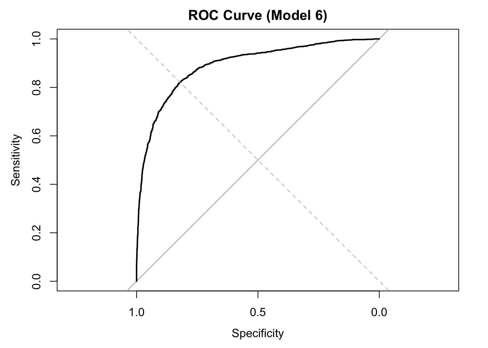
auc_value <- auc(roc_curve)
cat("AUC:", auc_value, "\n")AUC: 0.8941156 4.7 Logistic Regression Model 7 (Slope Cut-off = 15)
set.seed(123)
sample_Q7 <- subset(train_grids_v4,Slope_Angle < 15)
nrow(sample_Q7)[1] 9899ggplot(data=sample_Q7, aes(x= `Slope_Angle`)) +
geom_histogram(bins=10, color="black", fill="#e9531e")+
ggtitle("Slope Stratified Sampling (Cut-off 15)")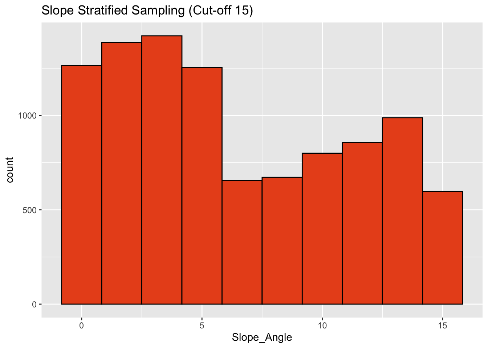
sample <- sample(c(TRUE, FALSE), nrow(sample_Q7), replace=TRUE, prob=c(0.70,0.30))
Q7_train <- sample_Q7[sample, ]
Q7_test <- sample_Q7[!sample, ]log_model_7 <- glm(Landslide ~ Elevation + Slope_Angle + Aspect_North + Aspect_NorthEast + Aspect_East+Aspect_SouthEast+Aspect_South + Aspect_SouthWest +Aspect_West + Profile_Curvature +Plan_Curvature + Lithology_Metamorphic+Lithology_Sedimentary + Lithology_Plutonic + Proximity_Settlement+Proximity_Stream+Proximity_Road+Proximity_Fault+Landuse_Vegetation+Precipitation+TWI+SPI+STI, family = "binomial", data = sample_Q7)4.7.1 Generating Model Summary
summary(log_model_7)
Call:
glm(formula = Landslide ~ Elevation + Slope_Angle + Aspect_North +
Aspect_NorthEast + Aspect_East + Aspect_SouthEast + Aspect_South +
Aspect_SouthWest + Aspect_West + Profile_Curvature + Plan_Curvature +
Lithology_Metamorphic + Lithology_Sedimentary + Lithology_Plutonic +
Proximity_Settlement + Proximity_Stream + Proximity_Road +
Proximity_Fault + Landuse_Vegetation + Precipitation + TWI +
SPI + STI, family = "binomial", data = sample_Q7)
Coefficients:
Estimate Std. Error z value Pr(>|z|)
(Intercept) -1.802e+00 2.366e-01 -7.615 2.64e-14 ***
Elevation -1.693e-04 5.207e-05 -3.252 0.001145 **
Slope_Angle 3.067e-01 7.560e-03 40.573 < 2e-16 ***
Aspect_North 3.827e-02 1.415e-01 0.270 0.786880
Aspect_NorthEast -1.965e-01 1.199e-01 -1.639 0.101267
Aspect_East -4.019e-01 1.188e-01 -3.384 0.000714 ***
Aspect_SouthEast -5.030e-01 1.143e-01 -4.402 1.07e-05 ***
Aspect_South -3.844e-01 1.095e-01 -3.512 0.000445 ***
Aspect_SouthWest -3.941e-01 1.109e-01 -3.555 0.000378 ***
Aspect_West -2.890e-01 1.129e-01 -2.559 0.010484 *
Profile_Curvature -8.378e+02 3.202e+01 -26.163 < 2e-16 ***
Plan_Curvature -7.877e+02 4.041e+01 -19.491 < 2e-16 ***
Lithology_Metamorphic -5.097e-01 7.154e-02 -7.124 1.05e-12 ***
Lithology_Sedimentary 5.674e-02 8.166e-02 0.695 0.487183
Lithology_Plutonic -1.465e+00 1.697e-01 -8.635 < 2e-16 ***
Proximity_Settlement 1.111e-05 5.096e-05 0.218 0.827447
Proximity_Stream -5.642e-03 2.702e-03 -2.088 0.036793 *
Proximity_Road -3.610e-03 1.777e-03 -2.032 0.042199 *
Proximity_Fault -1.422e-05 2.977e-05 -0.478 0.632917
Landuse_Vegetation 5.302e-01 6.358e-02 8.339 < 2e-16 ***
Precipitation -6.749e+00 7.277e-01 -9.275 < 2e-16 ***
TWI -3.925e-02 1.250e-02 -3.140 0.001691 **
SPI 2.059e+00 1.058e+00 1.946 0.051636 .
STI -7.487e-04 1.307e-03 -0.573 0.566742
---
Signif. codes: 0 '***' 0.001 '**' 0.01 '*' 0.05 '.' 0.1 ' ' 1
(Dispersion parameter for binomial family taken to be 1)
Null deviance: 12593.8 on 9898 degrees of freedom
Residual deviance: 7703.1 on 9875 degrees of freedom
AIC: 7751.1
Number of Fisher Scoring iterations: 54.7.2 Calculating Percentage of Deviance
100*with(summary(log_model_7), 1 - deviance/null.deviance)[1] 38.834114.7.3 Confusion Matrix
blr_confusion_matrix(log_model_7, cutoff = 0.5)Confusion Matrix and Statistics
Reference
Prediction 0 1
0 5961 1027
1 644 2267
Accuracy : 0.8312
No Information Rate : 0.6672
Kappa : 0.6085
McNemars's Test P-Value : 0.0000
Sensitivity : 0.6882
Specificity : 0.9025
Pos Pred Value : 0.7788
Neg Pred Value : 0.8530
Prevalence : 0.3328
Detection Rate : 0.2290
Detection Prevalence : 0.2941
Balanced Accuracy : 0.7954
Precision : 0.7788
Recall : 0.6882
'Positive' Class : 1vif(log_model_7) Elevation Slope_Angle Aspect_North
2.341444 1.341770 1.429201
Aspect_NorthEast Aspect_East Aspect_SouthEast
1.718443 1.752454 1.864938
Aspect_South Aspect_SouthWest Aspect_West
1.992124 1.926948 1.854122
Profile_Curvature Plan_Curvature Lithology_Metamorphic
1.206487 1.325544 1.242221
Lithology_Sedimentary Lithology_Plutonic Proximity_Settlement
1.148306 1.013311 1.837073
Proximity_Stream Proximity_Road Proximity_Fault
1.356210 1.946011 1.030098
Landuse_Vegetation Precipitation TWI
1.228579 1.282037 1.603045
SPI STI
1.255000 1.256480 4.7.4 Ploting ROC Curve and Calculating AUC
predicted <- predict(log_model_7, Q7_test[, 6:29], type="response")
roc_curve <- roc(Q7_test$Landslide, predicted)Setting levels: control = 0, case = 1Setting direction: controls < cases# Plot the ROC curve
plot(roc_curve, main = "ROC Curve (Model 7)")
abline(0, 1, lty = 2, col = "gray") # Add a reference line for a random classifierauc_value <- auc(roc_curve)
cat("AUC:", auc_value, "\n")AUC: 0.8926449 4.7.5 Stepwise Selection
For the initial/ first cut model, all the independent variables are put into the model. Our goal is to include a limited number of independent variables (5-15) which are all significant, without sacrificing too much on the model performance. The rationale behind not-including too many variables is that the model would be over fitted and would become unstable when tested on the validation sample. The variable reduction is done using forward or backward or stepwise variable selection procedures. We will use blr_step_aic_both() to shortlist predictors for our model.
blr_step_aic_both(log_model_7)Stepwise Selection Method
-------------------------
Candidate Terms:
1 . Elevation
2 . Slope_Angle
3 . Aspect_North
4 . Aspect_NorthEast
5 . Aspect_East
6 . Aspect_SouthEast
7 . Aspect_South
8 . Aspect_SouthWest
9 . Aspect_West
10 . Profile_Curvature
11 . Plan_Curvature
12 . Lithology_Metamorphic
13 . Lithology_Sedimentary
14 . Lithology_Plutonic
15 . Proximity_Settlement
16 . Proximity_Stream
17 . Proximity_Road
18 . Proximity_Fault
19 . Landuse_Vegetation
20 . Precipitation
21 . TWI
22 . SPI
23 . STI
Variables Entered/Removed:
- Slope_Angle added
- Profile_Curvature added
- Plan_Curvature added
- Landuse_Vegetation added
- Precipitation added
- Lithology_Plutonic added
- Lithology_Metamorphic added
- Elevation added
- Aspect_North added
- TWI added
- Aspect_SouthEast added
- Proximity_Road added
- SPI added
- Proximity_Stream added
- Aspect_SouthWest added
- Aspect_South added
- Aspect_East added
- Aspect_West added
- Aspect_North removed
- Aspect_NorthEast added
No more variables to be added or removed.
Stepwise Summary
------------------------------------------------------------------------
Variable Method AIC BIC Deviance
------------------------------------------------------------------------
Slope_Angle addition 10076.292 10090.692 10072.292
Profile_Curvature addition 8627.061 8648.661 8621.061
Plan_Curvature addition 8194.504 8223.305 8186.504
Landuse_Vegetation addition 8040.435 8076.436 8030.435
Precipitation addition 7944.499 7987.701 7932.499
Lithology_Plutonic addition 7858.035 7908.436 7844.035
Lithology_Metamorphic addition 7794.689 7852.291 7778.689
Elevation addition 7774.753 7839.555 7756.753
Aspect_North addition 7768.277 7840.278 7748.277
TWI addition 7762.896 7842.098 7740.896
Aspect_SouthEast addition 7758.903 7845.305 7734.903
Proximity_Road addition 7756.074 7849.676 7730.074
SPI addition 7754.081 7854.884 7726.081
Proximity_Stream addition 7752.955 7860.958 7722.955
Aspect_SouthWest addition 7752.424 7867.627 7720.424
Aspect_South addition 7750.729 7873.132 7716.729
Aspect_East addition 7746.819 7876.423 7710.819
Aspect_West addition 7744.845 7881.648 7706.845
Aspect_North removal 7743.888 7873.491 7707.888
Aspect_NorthEast addition 7742.250 7879.054 7704.250
------------------------------------------------------------------------log_model_7 %>%
blr_step_aic_both() %>%
plot()Stepwise Selection Method
-------------------------
Candidate Terms:
1 . Elevation
2 . Slope_Angle
3 . Aspect_North
4 . Aspect_NorthEast
5 . Aspect_East
6 . Aspect_SouthEast
7 . Aspect_South
8 . Aspect_SouthWest
9 . Aspect_West
10 . Profile_Curvature
11 . Plan_Curvature
12 . Lithology_Metamorphic
13 . Lithology_Sedimentary
14 . Lithology_Plutonic
15 . Proximity_Settlement
16 . Proximity_Stream
17 . Proximity_Road
18 . Proximity_Fault
19 . Landuse_Vegetation
20 . Precipitation
21 . TWI
22 . SPI
23 . STI
Variables Entered/Removed:
- Slope_Angle added
- Profile_Curvature added
- Plan_Curvature added
- Landuse_Vegetation added
- Precipitation added
- Lithology_Plutonic added
- Lithology_Metamorphic added
- Elevation added
- Aspect_North added
- TWI added
- Aspect_SouthEast added
- Proximity_Road added
- SPI added
- Proximity_Stream added
- Aspect_SouthWest added
- Aspect_South added
- Aspect_East added
- Aspect_West added
- Aspect_North removed
- Aspect_NorthEast added
No more variables to be added or removed.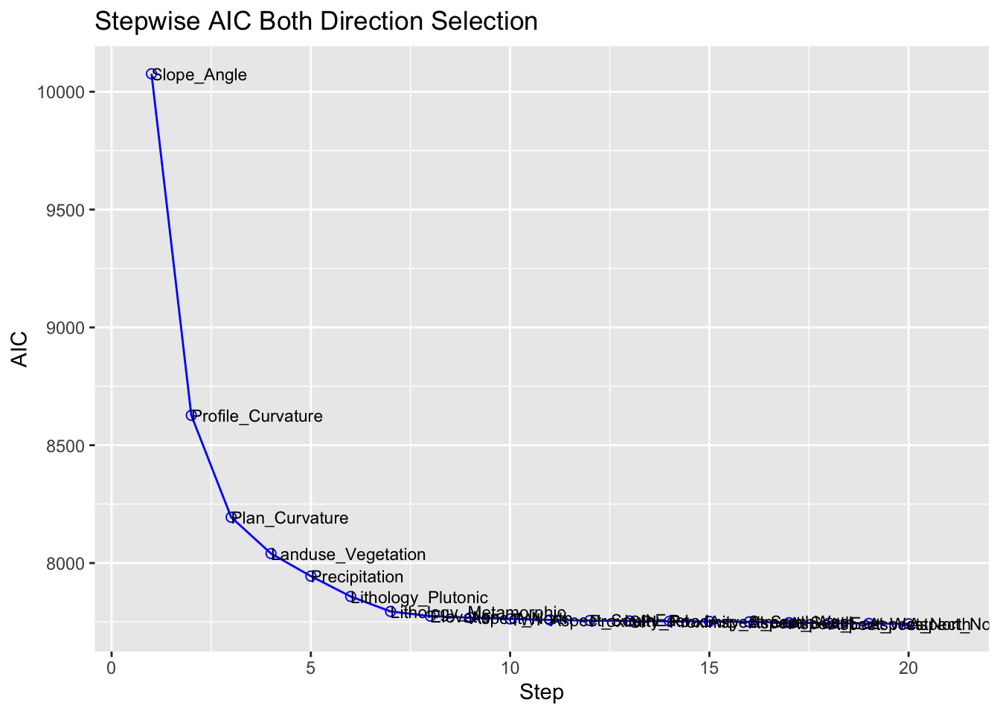
4.7.6 Model Update
log_model_7_modified <- glm(Landslide ~ Elevation + Slope_Angle + Aspect_North + Aspect_SouthEast + Profile_Curvature +Plan_Curvature + Lithology_Metamorphic+Lithology_Sedimentary + Lithology_Plutonic + Proximity_Road+ Landuse_Vegetation+Precipitation, family = "binomial", data = sample_Q7)summary(log_model_7_modified)
Call:
glm(formula = Landslide ~ Elevation + Slope_Angle + Aspect_North +
Aspect_SouthEast + Profile_Curvature + Plan_Curvature + Lithology_Metamorphic +
Lithology_Sedimentary + Lithology_Plutonic + Proximity_Road +
Landuse_Vegetation + Precipitation, family = "binomial",
data = sample_Q7)
Coefficients:
Estimate Std. Error z value Pr(>|z|)
(Intercept) -2.677e+00 1.475e-01 -18.152 < 2e-16 ***
Elevation -1.441e-04 4.896e-05 -2.942 0.00326 **
Slope_Angle 3.122e-01 7.393e-03 42.225 < 2e-16 ***
Aspect_North 3.202e-01 1.192e-01 2.687 0.00721 **
Aspect_SouthEast -2.054e-01 8.423e-02 -2.439 0.01472 *
Profile_Curvature -8.352e+02 3.137e+01 -26.622 < 2e-16 ***
Plan_Curvature -7.460e+02 3.697e+01 -20.178 < 2e-16 ***
Lithology_Metamorphic -4.723e-01 7.075e-02 -6.675 2.47e-11 ***
Lithology_Sedimentary 5.532e-02 8.124e-02 0.681 0.49595
Lithology_Plutonic -1.473e+00 1.688e-01 -8.726 < 2e-16 ***
Proximity_Road -3.263e-03 1.676e-03 -1.947 0.05148 .
Landuse_Vegetation 5.543e-01 6.167e-02 8.987 < 2e-16 ***
Precipitation -6.394e+00 6.987e-01 -9.150 < 2e-16 ***
---
Signif. codes: 0 '***' 0.001 '**' 0.01 '*' 0.05 '.' 0.1 ' ' 1
(Dispersion parameter for binomial family taken to be 1)
Null deviance: 12593.8 on 9898 degrees of freedom
Residual deviance: 7737.8 on 9886 degrees of freedom
AIC: 7763.8
Number of Fisher Scoring iterations: 5vif(log_model_7_modified) Elevation Slope_Angle Aspect_North
2.083395 1.289639 1.016584
Aspect_SouthEast Profile_Curvature Plan_Curvature
1.019076 1.161964 1.114569
Lithology_Metamorphic Lithology_Sedimentary Lithology_Plutonic
1.220348 1.141323 1.011247
Proximity_Road Landuse_Vegetation Precipitation
1.743175 1.161973 1.187435 5.0 Geographically Weighted Logistic Regression
Next, we will run Geographically Weighted Logistic Regression (GWLR) models using sample_Q5 dataset and GWmodel package. In order to perform GWLR modelling in GWmodel, we will first need to convert the datasets into a SpatialPointsDataFrame.
20%
set.seed(123)
# Model 6 Slope Cut-off = 20
sample <- sample(c(TRUE, FALSE), nrow(sample_Q6), replace=TRUE, prob=c(0.20,0.80))
Q6_fit <- sample_Q6[sample, ]
Q6_fit.sf <- st_as_sf(Q6_fit,
coords = c("X", "Y"))
Q6_fit.sf <- st_set_crs(Q6_fit.sf, 32632)
Q6_fit.sp <- Q6_fit.sf %>% as_Spatial()
# Model 7 Slope Cut-off = 20
sample <- sample(c(TRUE, FALSE), nrow(sample_Q7), replace=TRUE, prob=c(0.20,0.80))
Q7_fit <- sample_Q6[sample, ]
Q7_fit.sf <- st_as_sf(Q7_fit,
coords = c("X", "Y"))
Q7_fit.sf <- st_set_crs(Q7_fit.sf, 32632)
Q7_fit.sp <- Q7_fit.sf %>% as_Spatial()Q6_fit.sp <- read_rds("~/IS485-Landslide/data/rds/Q6_fit.sp.rds")
Q7_fit.sp <- read_rds("~/IS485-Landslide/data/rds/Q7_fit.sp.rds")We will make a quick plot to see the geographical distribution of landslide and non-landslide samples in Q6_fit.sp & Q7_fit.sp.
Q6_fit.sf$Landslide <- as.factor(Q6_fit.sf$Landslide)
Q7_fit.sf$Landslide <- as.factor(Q7_fit.sf$Landslide)5.1 Calculating Adaptive Bandwidth
In this section, we will calculate the adaptive bandwidth for fitting a GWLE model using the bw.ggwr function from GWmodel.
Firstly, we will create a distance matrix to be used for calculating the bandwidth. The st_coordinates function is used to extract the coordinates from the Q5_train.sf spatial object. The gw.dist function is then used to calculate the distance matrix dist.test based on these coordinates.
5.1.1 Model 6 (Slope Cut-off 20)
dist_mat <- st_coordinates(Q6_fit.sf)
dist.Q6 <- gw.dist(dp.locat=dist_mat,p=2, theta=0, longlat=FALSE)Now that, we have created the distance matrix, we will calculate the adaptive bandwidth value with specifications as below.
The
familyargument is set to"binomial", indicating that a binomial distribution is assumed for the dependent variable.The
approachargument is set to"CV", indicating that cross-validation is used for bandwidth selection.The
kernelargument is set to"gaussian", indicating that a Gaussian kernel function is used.The
adaptiveargument is set toTRUE, indicating that an adaptive kernel is used, where the bandwidth corresponds to the number of nearest neighbors.The
pandthetaarguments are set to2and0respectively, which are the default values for the power of the Minkowski distance and the angle to rotate the coordinate system.The
longlatargument is set toFALSE, indicating that Euclidean distances are calculated.Finally, the
dMatargument is set todist.test, which is the pre-specified distance matrix that we calculated earlier.
adaptive_bw <- bw.gwr(Landslide ~ Elevation + Slope_Angle + Aspect_North + Aspect_NorthEast + Aspect_East+Aspect_SouthEast+Aspect_South + Aspect_SouthWest +Aspect_West + Profile_Curvature +Plan_Curvature + Lithology_Metamorphic+Lithology_Sedimentary + Lithology_Plutonic+Lithology_Unconsolidated + Proximity_Settlement+Proximity_Stream+Proximity_Road+Proximity_Fault+Landuse_Vegetation+Precipitation+TWI+SPI+STI, data = Q6_fit.sp, approach="CV", kernel="gaussian",
adaptive=TRUE, p=2, theta=0, longlat=F)
Based on the result, the optimal adaptive bandwidth value that yields the lowest CV score is 203 (with CV score = 1312.815). We will use this value in fitting GWLR model gwlr.
5.2 Building Geographically Weighted Logistic Regression Model
We will use ggwr.basic() function from GWmodel package to fit a GWLR model gwlr using the specifications below.
The
bwargument is set to203, which is the optimal adaptive bandwidth value that yields the lowest CV score (1312.815). This value was determined in a previous step.The
familyargument is set to"binomial", indicating that a binomial distribution is assumed for the dependent variable. Thekernelargument is set to"gaussian", indicating that a Gaussian kernel function is used.The
adaptiveargument is set toTRUE, indicating that an adaptive kernel is used, where the bandwidth corresponds to the number of nearest neighbors. Thecvargument is set toTRUE, indicating that cross-validation data will be calculated.The
tolargument is set to0.00001, which is the threshold that determines the convergence of the IRLS procedure.The
pandthetaarguments are set to2and0respectively, which are the default values for the power of the Minkowski distance and the angle to rotate the coordinate system.The
longlatargument is set toFALSE, indicating that Euclidean distances are calculated.
gwlr <- ggwr.basic(Landslide ~ Elevation + Slope_Angle + Aspect_North + Aspect_NorthEast + Aspect_East+Aspect_SouthEast+Aspect_South + Aspect_SouthWest +Aspect_West + Profile_Curvature +Plan_Curvature + Lithology_Metamorphic+Lithology_Sedimentary + Lithology_Plutonic+Lithology_Unconsolidated + Proximity_Settlement+Proximity_Stream+Proximity_Road+Proximity_Fault+Landuse_Vegetation+Precipitation+TWI+SPI+STI, data = Q6_fit.sp, bw= 100, family = "binomial", kernel = "gaussian", adaptive = TRUE, cv = T, p = 2, theta = 0, longlat = FALSE)5.3 Model Summary
gwlr ***********************************************************************
* Package GWmodel *
***********************************************************************
Program starts at: 2024-02-20 08:43:41.302803
Call:
ggwr.basic(formula = Landslide ~ Elevation + Slope_Angle + Aspect_North +
Aspect_NorthEast + Aspect_East + Aspect_SouthEast + Aspect_South +
Aspect_SouthWest + Aspect_West + Profile_Curvature + Plan_Curvature +
Lithology_Metamorphic + Lithology_Sedimentary + Lithology_Plutonic +
Lithology_Unconsolidated + Proximity_Settlement + Proximity_Stream +
Proximity_Road + Proximity_Fault + Landuse_Vegetation + Precipitation +
TWI + SPI + STI, data = Q5_train_sp, regression.points = Q5_test_sp,
bw = 203, family = "binomial", kernel = "gaussian", adaptive = TRUE,
cv = T, tol = 1e-05, p = 2, theta = 0, longlat = FALSE)
Dependent (y) variable: Landslide
Independent variables: Elevation Slope_Angle Aspect_North Aspect_NorthEast Aspect_East Aspect_SouthEast Aspect_South Aspect_SouthWest Aspect_West Profile_Curvature Plan_Curvature Lithology_Metamorphic Lithology_Sedimentary Lithology_Plutonic Lithology_Unconsolidated Proximity_Settlement Proximity_Stream Proximity_Road Proximity_Fault Landuse_Vegetation Precipitation TWI SPI STI
Number of data points: 12936
Used family: binomial
***********************************************************************
* Results of Generalized linear Regression *
***********************************************************************
Call:
NULL
Coefficients:
Estimate Std. Error z value Pr(>|z|)
Intercept -3.437e+00 2.804e-01 -12.255 < 2e-16 ***
Elevation -2.053e-04 5.153e-05 -3.983 6.80e-05 ***
Slope_Angle 2.564e-01 4.957e-03 51.712 < 2e-16 ***
Aspect_North 6.226e-02 1.286e-01 0.484 0.6284
Aspect_NorthEast -9.202e-02 1.092e-01 -0.843 0.3993
Aspect_East -1.559e-01 1.083e-01 -1.439 0.1501
Aspect_SouthEast -2.629e-01 1.050e-01 -2.505 0.0123 *
Aspect_South -2.082e-01 1.023e-01 -2.036 0.0417 *
Aspect_SouthWest -6.468e-02 1.051e-01 -0.615 0.5383
Aspect_West -4.534e-02 1.056e-01 -0.430 0.6675
Profile_Curvature -8.460e+02 3.008e+01 -28.120 < 2e-16 ***
Plan_Curvature -7.246e+02 3.422e+01 -21.173 < 2e-16 ***
Lithology_Metamorphic 7.394e-01 1.392e-01 5.313 1.08e-07 ***
Lithology_Sedimentary 1.098e+00 1.447e-01 7.588 3.24e-14 ***
Lithology_Plutonic -6.174e-01 1.322e-01 -4.671 2.99e-06 ***
Lithology_Unconsolidated 1.305e+00 1.404e-01 9.294 < 2e-16 ***
Proximity_Settlement 7.413e-05 4.614e-05 1.607 0.1081
Proximity_Stream -5.654e-03 2.351e-03 -2.405 0.0162 *
Proximity_Road -3.436e-03 1.607e-03 -2.138 0.0325 *
Proximity_Fault 2.964e-05 2.555e-05 1.160 0.2462
Landuse_Vegetation 6.619e-01 5.991e-02 11.048 < 2e-16 ***
Precipitation -5.054e+00 6.600e-01 -7.657 1.90e-14 ***
TWI -2.496e-02 1.328e-02 -1.880 0.0601 .
SPI 5.565e-01 9.392e-01 0.593 0.5535
STI 1.216e-04 1.135e-03 0.107 0.9147
---
Signif. codes: 0 '***' 0.001 '**' 0.01 '*' 0.05 '.' 0.1 ' ' 1
(Dispersion parameter for binomial family taken to be 1)
Null deviance: 17778.2 on 12935 degrees of freedom
Residual deviance: 9367.3 on 12911 degrees of freedom
AIC: 9417.3
Number of Fisher Scoring iterations: 6
AICc: 9417.362
Pseudo R-square value: 0.4731051
***********************************************************************
* Results of Geographically Weighted Regression *
***********************************************************************
*********************Model calibration information*********************
Kernel function: gaussian
Adaptive bandwidth: 203 (number of nearest neighbours)
Regression points: A seperate set of regression points is used.
Distance metric: Euclidean distance metric is used.
************Summary of Generalized GWR coefficient estimates:**********
Min. 1st Qu. Median 3rd Qu.
Intercept -2.2292e+03 -4.7322e+00 -2.4838e+00 1.1179e+00
Elevation -5.5303e-03 -1.9487e-03 -1.0699e-03 -3.9695e-04
Slope_Angle 1.3679e-01 2.3957e-01 2.6247e-01 3.0523e-01
Aspect_North -3.2685e+00 -3.7158e-01 6.6438e-02 5.7209e-01
Aspect_NorthEast -2.0677e+00 -5.3232e-01 -5.1641e-02 4.9088e-01
Aspect_East -2.2102e+00 -6.6302e-01 -1.2399e-01 5.9538e-01
Aspect_SouthEast -2.2022e+00 -7.7883e-01 -7.5033e-02 6.4405e-01
Aspect_South -2.7350e+00 -6.9757e-01 -1.2606e-01 5.8518e-01
Aspect_SouthWest -2.1135e+00 -5.8536e-01 -1.6144e-01 3.7881e-01
Aspect_West -2.1831e+00 -4.1492e-01 -9.8628e-02 4.2942e-01
Profile_Curvature -1.4988e+03 -8.7123e+02 -7.1415e+02 -5.6137e+02
Plan_Curvature -2.3965e+03 -1.0010e+03 -7.7246e+02 -5.5740e+02
Lithology_Metamorphic -4.0714e+02 -1.5267e+00 -4.2470e-01 5.1771e-01
Lithology_Sedimentary -4.0603e+02 -1.7469e+00 -3.9433e-01 7.4777e-01
Lithology_Plutonic -9.0420e+00 -3.6743e+00 -1.4776e+00 -3.0875e-01
Lithology_Unconsolidated -4.0720e+02 -1.3369e+00 2.2028e-01 1.0894e+00
Proximity_Settlement -1.1802e-03 -3.0190e-05 2.0770e-04 6.3443e-04
Proximity_Stream -1.5947e-01 -3.6857e-02 -8.1638e-03 1.9761e-02
Proximity_Road -9.5281e-02 -1.3754e-02 -7.6464e-04 1.6616e-02
Proximity_Fault -2.6713e-03 -2.4192e-04 8.0035e-05 4.6317e-04
Landuse_Vegetation -7.7653e-01 6.7617e-02 5.2753e-01 9.0657e-01
Precipitation -7.9766e+01 -4.5176e+00 7.8831e+00 1.7006e+01
TWI -4.0499e-01 -1.4649e-01 -7.6203e-02 -2.0298e-02
SPI -1.8961e+01 -2.8786e+00 7.3061e-01 4.0492e+00
STI -1.4056e-02 -3.0657e-03 1.5789e-03 5.7384e-03
Max.
Intercept 412.2115
Elevation 0.0028
Slope_Angle 0.5331
Aspect_North 3.2800
Aspect_NorthEast 1.9637
Aspect_East 2.5205
Aspect_SouthEast 2.3429
Aspect_South 3.4021
Aspect_SouthWest 2.6369
Aspect_West 2.2829
Profile_Curvature 161.7406
Plan_Curvature 402.5170
Lithology_Metamorphic 2277.2060
Lithology_Sedimentary 2169.7130
Lithology_Plutonic 1.3806
Lithology_Unconsolidated 2180.1257
Proximity_Settlement 0.0023
Proximity_Stream 0.1261
Proximity_Road 0.0846
Proximity_Fault 0.0021
Landuse_Vegetation 2.4352
Precipitation 57.6561
TWI 0.3045
SPI 28.0687
STI 0.0302
************************Diagnostic information*************************
***********************************************************************
Program stops at: 2024-02-20 09:14:42.8669 regression.points <- gwlr$SDFSpatial Interpolation
valtellina_boundary <- st_union(valtellina) %>% st_sf()
class(valtellina_boundary)[1] "sf" "data.frame"Prediction locations
We wish to predict the prices of properties continuously in space in Athens. To do that, we create a fine raster grid covering Athens and consider the centroids of the raster cells as the prediction locations. We create the raster grid with the rast() function of terra by specifying the region to be covered (map), and the number of rows and columns of the grid (nrows = 700, ncols = 1066). The prediction locations are the centroids of the raster cells and can be obtained with the xyFromCell() function of terra. Alternatively, we could create the grid using the st_make_grid() function of sf by specifying the number of grid cells in the horizontal and vertical directions or the cell size.
grid <- rast(valtellina_boundary, nrows = 700, ncols = 1066)
xy <- xyFromCell(grid, 1:ncell(grid))
coop <- st_as_sf(as.data.frame(xy), coords = c("x", "y"),
crs = st_crs(valtellina_boundary))
coop <- st_filter(coop, valtellina_boundary)
qtm(coop)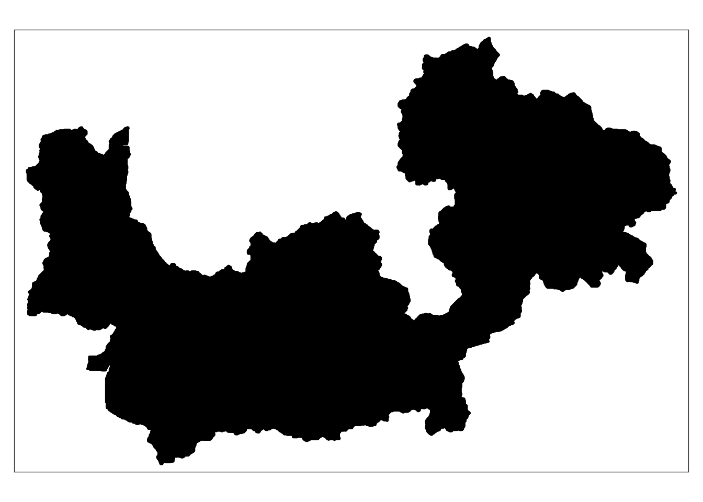
Closest Observation
We can obtain predictions at each of the prediction locations as the values of the closest sampled locations. To do that, we can employ the Voronoi diagram (also known as Dirichlet or Thiessen diagram). The Voronoi diagram is created when a region with n points is partitioned into convex polygons such that each polygon contains exactly one generating point, and every point in a given polygon is closer to its generating point than to any other.
Given a set of points, we can create a Voronoi diagram with the voronoi() function of terra specifying the points as an object of class SpatVector of terra, and map to set the outer boundary of the Voronoi diagram. This returns a Voronoi diagram for the set of points assuming constant values in each of the polygons.
Then, we can use the functions tm_shape() and tm_fill() of tmap to plot the values of the variable in each of the polygons indicating the name of the variable col = "vble", the palette palette = "viridis" and the level of transparency alpha = 0.6 (if the plot is interactive).
# Voronoi
v <- voronoi(x = vect(regression.points), bnd = valtellina_boundary)
plot(v)
points(vect(regression.points), cex = 0.5)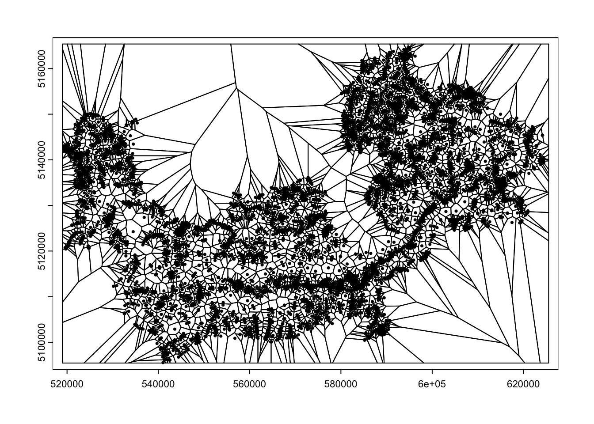
# Prediction
v <- st_as_sf(v)
tm_shape(v) +
tm_fill(col = "Landuse_Vegetation", palette = "Spectral")Variable(s) "Landuse_Vegetation" contains positive and negative values, so midpoint is set to 0. Set midpoint = NA to show the full spectrum of the color palette.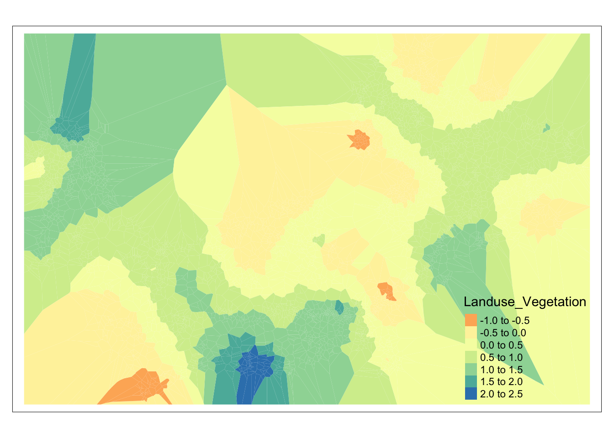
resp <- st_intersection(v, coop)Warning: attribute variables are assumed to be spatially constant throughout
all geometriesresp$pred <- resp$Landuse_Vegetation
pred_voronoi <- rasterize(resp, grid, field = "pred", fun = "mean")voronoi_map <- tm_shape(pred_voronoi) +
tm_raster(palette = "Spectral",
title = "Landuse Vegetation",
midpoint = NA) +
tm_layout(main.title = "Voronoi",
main.title.position = "center",
main.title.size = 0.8,
legend.position = c("RIGHT", "BOTTOM"),
legend.title.size = 0.5,
legend.text.size = 0.4,
frame = TRUE) +
tm_compass(type="8star", text.size = 0.5, size = 2, position=c("RIGHT", "TOP")) +
tm_scale_bar(position=c("LEFT", "TOP"),
text.size = 0.4)
voronoi_map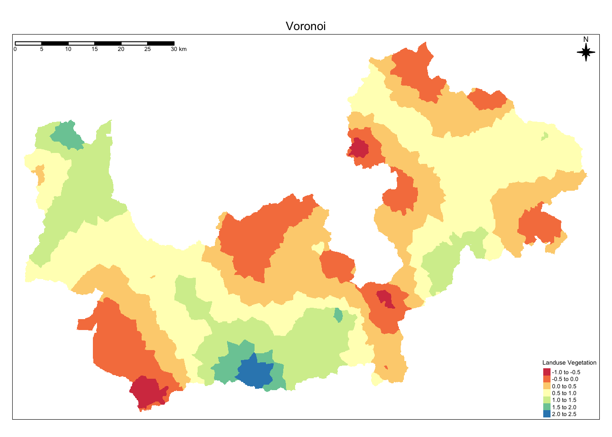
IDW: Inverse Distance Weighting
In the IDW method, values at unsampled locations are estimated as the weighted average of values from the rest of locations with weights inversely proportional to the distance between the unsampled and the sampled locations.
We can apply the IDW method with the gstat() function of gstat and the following arguments:
formula:vble ~ 1to have an intercept only model,nmax: number of neighbors is set equal to the total number of locations,idp: inverse distance power is set toidp = 1to have weights with β=1�=1.
Then, we use the predict() function to obtain the predictions and tmap to show the results
pacman::p_load(gstat)
res <- gstat(formula = Landuse_Vegetation ~ 1, locations = regression.points,
nmax = nrow(regression.points), # use all the neighbors locations
set = list(idp = 1)) # beta = 1
resp <- predict(res, coop)[inverse distance weighted interpolation]resp$x <- st_coordinates(resp)[,1]
resp$y <- st_coordinates(resp)[,2]
resp$pred <- resp$var1.pred
pred_idw <- rasterize(resp, grid, field = "pred", fun = "mean")idw_map <- tm_shape(pred_idw) +
tm_raster(palette = "Spectral",
title = "Landuse Vegetation",
midpoint = NA) +
tm_layout(main.title = "IDW",
main.title.position = "center",
main.title.size = 0.8,
legend.position = c("RIGHT", "BOTTOM"),
legend.title.size = 0.5,
legend.text.size = 0.4,
frame = TRUE) +
tm_compass(type="8star", text.size = 0.5, size = 2, position=c("RIGHT", "TOP")) +
tm_scale_bar(position=c("LEFT", "TOP"),
text.size = 0.4)
idw_map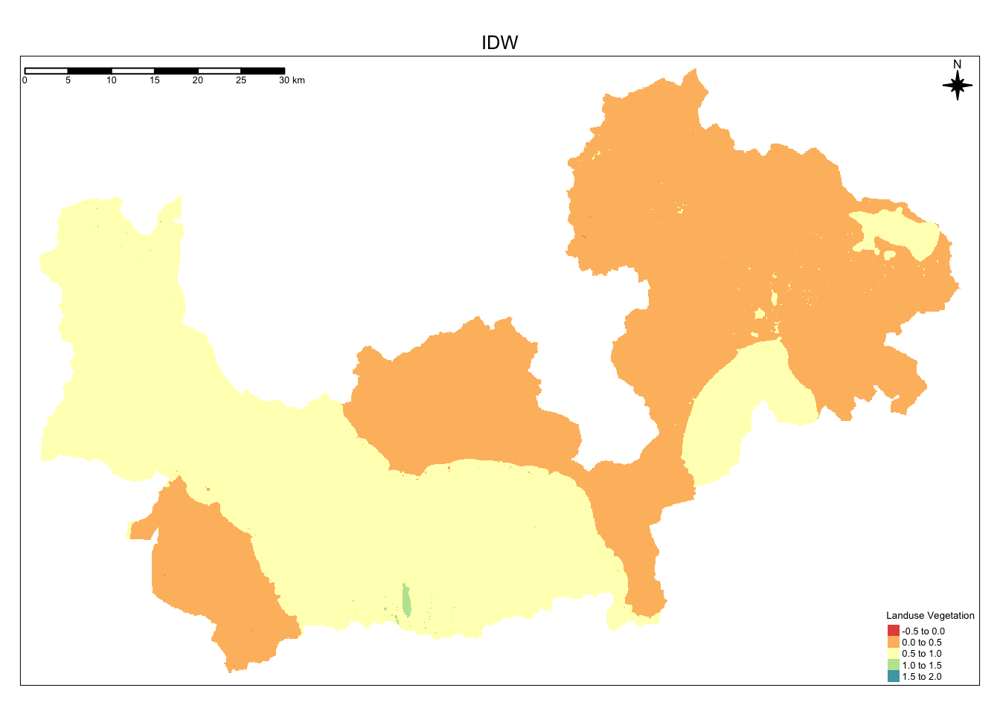
Nearest neighbors
In the nearest neighbors interpolation method, values at unsampled locations are estimated as the average of the values of the k closest sampled locations. Specifically,
We can compute predictions using nearest neighbors interpolation with the gstat() function of gstat. Here, we consider the number of closest sampled locations equal to 5 by setting nmax = 5. Unlike the IDW method, in the nearest neighbors approach locations further away from the location where we wish to predict are assigned the same weights. Therefore, the inverse distance power idp is set equal to zero so all the neighbors are equally weighted.
Then, we use the predict() function to get predictions at unsampled locations given in coop.
res <- gstat(formula = Landuse_Vegetation ~ 1, locations = regression.points, nmax = 5,
set = list(idp = 0))
resp <- predict(res, coop)[inverse distance weighted interpolation]resp$x <- st_coordinates(resp)[,1]
resp$y <- st_coordinates(resp)[,2]
resp$pred <- resp$var1.pred
pred_nn <- rasterize(resp, grid, field = "pred", fun = "mean")nn_map <- tm_shape(pred_nn) +
tm_raster(palette = "Spectral",
title = "Landuse Vegetation",
midpoint = NA) +
tm_layout(main.title = "Nearest Neighbour",
main.title.position = "center",
main.title.size = 0.8,
legend.position = c("RIGHT", "BOTTOM"),
legend.title.size = 0.5,
legend.text.size = 0.4,
frame = TRUE) +
tm_compass(type="8star", text.size = 0.5, size = 2, position=c("RIGHT", "TOP")) +
tm_scale_bar(position=c("LEFT", "TOP"),
text.size = 0.4)
nn_mapEnsemble approach
Predictions can also be obtained using an ensemble approach that combines the predictions obtained with several spatial interpolation methods.
Here, we use an ensemble approach to predict the price per square meter of apartments in Athens by combining the predictions of the three previous approaches (closest observation, IDW, nearest neighbors) using equal weights.
The predictions with the closest observation method are obtained using the Voronoi diagram as follows:
# Closest observation (Voronoi)
v <- terra::voronoi(x = terra::vect(regression.points), bnd = valtellina_boundary)
v <- st_as_sf(v)
p1 <- st_intersection(v, coop)$Landuse_VegetationWarning: attribute variables are assumed to be spatially constant throughout
all geometriesThe IDW approach can be applied with the gstat() function of gstat specifying nmax as the total number of locations and idp = 1.
# IDW
gs <- gstat(formula = Landuse_Vegetation ~ 1, locations = regression.points, nmax = nrow(regression.points),
set = list(idp = 1))
p2 <- predict(gs, coop)$var1.pred[inverse distance weighted interpolation]The nearest neighbors method is applied with the gstat() function specifying nmax as the number of neighbors and with equal weights (idp = 0).
# Nearest neighbors
nn <- gstat(formula = Landuse_Vegetation ~ 1, locations = regression.points, nmax = 5,
set = list(idp = 0))
p3 <- predict(nn, coop)$var1.pred[inverse distance weighted interpolation]Finally, the ensemble predictions are obtained by combining the predictions of these three methods with equal weights.
# Ensemble (equal weights)
weights <- c(1/3, 1/3, 1/3)
p4 <- p1 * weights[1] + p2 * weights[2] + p3 * weights[3]We create a map with the predictions by creating a raster with the predictions and using the tmap package.
resp <- data.frame(
x = st_coordinates(coop)[, 1],
y = st_coordinates(coop)[, 2],
pred = p4)
resp <- st_as_sf(resp, coords = c("x", "y"), crs = st_crs(map))
pred_ensemble <- rasterize(resp, grid, field = "pred", fun = "mean") ensemble_map <- tm_shape(pred_ensemble) +
tm_raster(palette = "Spectral",
title = "Landuse Vegetation",
midpoint = NA) +
tm_layout(main.title = "Ensemble",
main.title.position = "center",
main.title.size = 0.8,
legend.position = c("RIGHT", "BOTTOM"),
legend.title.size = 0.5,
legend.text.size = 0.4,
frame = TRUE) +
tm_compass(type="8star", text.size = 0.5, size = 2, position=c("RIGHT", "TOP")) +
tm_scale_bar(position=c("LEFT", "TOP"),
text.size = 0.4)
ensemble_maptmap_arrange(voronoi_map, idw_map, nn_map, ensemble_map)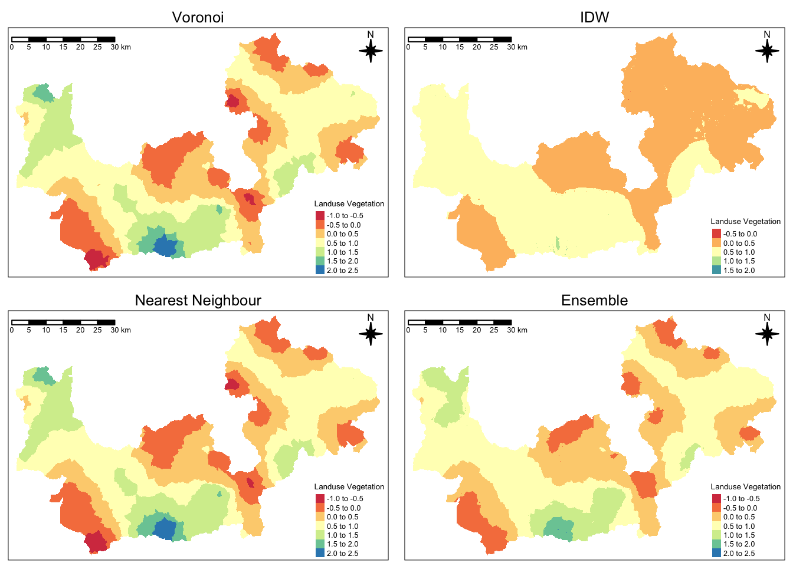
writeRaster(pred_nn, "~/IS485-Landslide/data/gwr_maps/landuse_nn.tif", overwrite=TRUE)
writeRaster(pred_idw, "~/IS485-Landslide/data/gwr_maps/landuse_idw.tif", overwrite=TRUE)
writeRaster(pred_voronoi, "~/IS485-Landslide/data/gwr_maps/landuse_voronoi.tif", overwrite=TRUE)
writeRaster(pred_ensemble, "~/IS485-Landslide/data/gwr_maps/landuse_ensemble.tif", overwrite=TRUE)Cross-Validation
We can assess the performance of each of the methods presented above using K-fold cross-validation and the root mean squared error (RMSE). First, we split the data in K parts. For each part, we use the remaining K−1 parts (training data) to fit the model and that part (testing data) to predict. We compute the RMSE by comparing the testing and predicted data in each of the K parts.
Note that if K is equal to the number of observations n, this procedure is called leave-one-out cross-validation (LOOCV). That means that n separate data sets are trained on all of the data except one observation, and then prediction is made for that one observation.
Here, we assess the performance of each of the methods previously employed to predict the prices of apartments in Athens. We create training and testing sets by using the dismo:kfold() function of the dismo package (Hijmans et al. 2022) to randomly assign the observations to K=5 groups of roughly equal size. For each group, we fit the model using the training data, and obtain predictions of the testing data. We calculate the RMSEs of each part and average the RMSEs to obtain a K-fold cross-validation estimate.
pacman::p_load(dismo)RMSE <- function(observed, predicted) {
sqrt(mean((observed - predicted)^2))
}
# Split data in 5 sets
kf <- dismo::kfold(nrow(regression.points), k = 5) # K-fold partitioning
# Vectors to store the RMSE values obtained with each method
rmse1 <- rep(NA, 5) # Closest observation
rmse2 <- rep(NA, 5) # IDW
rmse3 <- rep(NA, 5) # Nearest neighbors
rmse4 <- rep(NA, 5) # Ensemblefor(k in 1:5) {
# Split data in test and train
test <- regression.points[kf == k, ]
train <- regression.points[kf != k, ]
# Closest observation
v <- terra::voronoi(x = terra::vect(regression.points), bnd = valtellina_boundary)
v <- st_as_sf(v)
p1 <- st_intersection(v, coop)$Landuse_Vegetation
rmse1[k] <- RMSE(test$Landuse_Vegetation, p1)
# IDW
gs <- gstat(formula = Landuse_Vegetation ~ 1, locations = regression.points, nmax = nrow(regression.points),
set = list(idp = 1))
p2 <- predict(gs, coop)$var1.pred
rmse2[k] <- RMSE(test$Landuse_Vegetation, p2)
# Nearest neighbors
nn <- gstat(formula = Landuse_Vegetation ~ 1, locations = regression.points, nmax = 5,
set = list(idp = 0))
p3 <- predict(nn, coop)$var1.pred
rmse3[k] <- RMSE(test$Landuse_Vegetation, p3)
# Ensemble (weights are inverse RMSE so lower RMSE higher weight)
w <- 1/c(rmse1[k], rmse2[k], rmse3[k])
weights <- w/sum(w)
p4 <- p1 * weights[1] + p2 * weights[2] + p3 * weights[3]
rmse4[k] <- RMSE(test$Landuse_Vegetation, p4)
}The RMSE values obtained in each of the 5 splits are shown below.
# RMSE obtained for each of the 5 splits
data.frame(closest.obs = rmse1, IDW = rmse2,
nearest.neigh = rmse3, ensemble = rmse4)We see the minimum average RMSE corresponds to the ensemble method.
# Average RMSE over the 5 splits
data.frame(closest.obs = mean(rmse1), IDW = mean(rmse2),
nearest.neigh = mean(rmse3), ensemble = mean(rmse4))Page Break
write.csv(sample_Q6, "~/IS485-Landslide/data/aspatial/slope_20degree.csv")
write.csv(sample_Q7, "~/IS485-Landslide/data/aspatial/slope_15degree.csv")